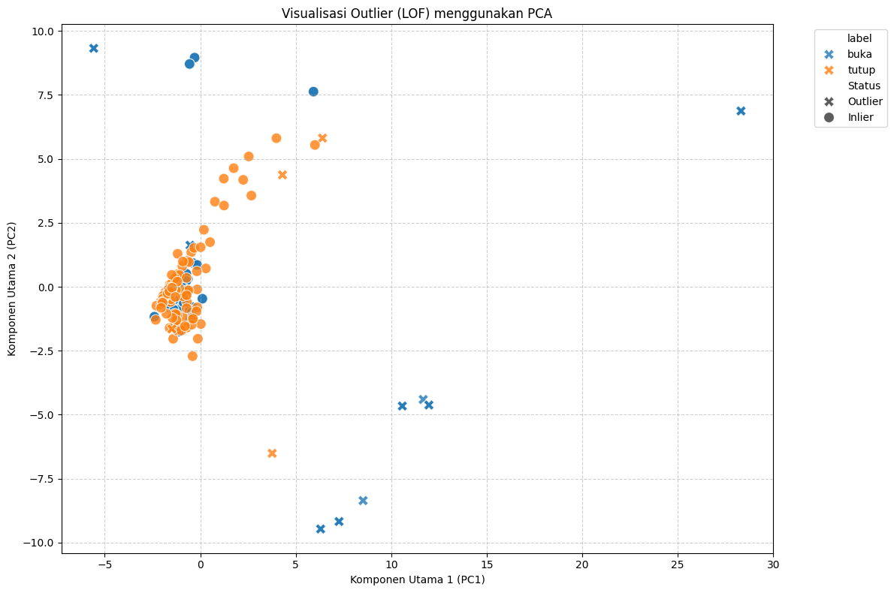
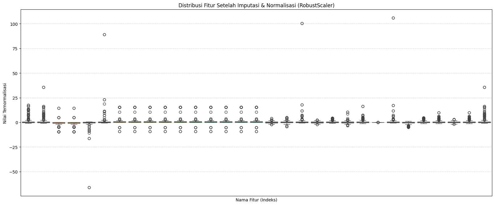
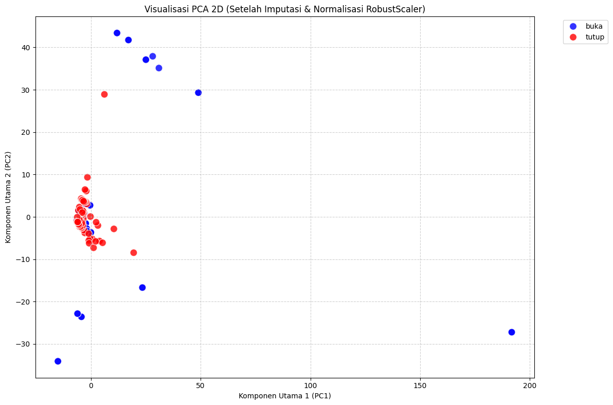
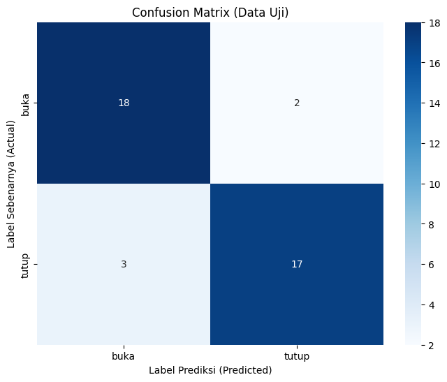

Import ibrary yang dibutuhkan#
!pip install scipy
!pip install scikit-learn
Requirement already satisfied: scipy in /usr/local/lib/python3.12/dist-packages (1.16.2)
Requirement already satisfied: numpy<2.6,>=1.25.2 in /usr/local/lib/python3.12/dist-packages (from scipy) (2.0.2)
Requirement already satisfied: scikit-learn in /usr/local/lib/python3.12/dist-packages (1.6.1)
Requirement already satisfied: numpy>=1.19.5 in /usr/local/lib/python3.12/dist-packages (from scikit-learn) (2.0.2)
Requirement already satisfied: scipy>=1.6.0 in /usr/local/lib/python3.12/dist-packages (from scikit-learn) (1.16.2)
Requirement already satisfied: joblib>=1.2.0 in /usr/local/lib/python3.12/dist-packages (from scikit-learn) (1.5.2)
Requirement already satisfied: threadpoolctl>=3.1.0 in /usr/local/lib/python3.12/dist-packages (from scikit-learn) (3.6.0)
!pip install tsfel librosa pandas numpy scipy streamlit
Collecting tsfel
Downloading tsfel-0.2.0-py3-none-any.whl.metadata (9.4 kB)
Requirement already satisfied: librosa in /usr/local/lib/python3.12/dist-packages (0.11.0)
Requirement already satisfied: pandas in /usr/local/lib/python3.12/dist-packages (2.2.2)
Requirement already satisfied: numpy in /usr/local/lib/python3.12/dist-packages (2.0.2)
Requirement already satisfied: scipy in /usr/local/lib/python3.12/dist-packages (1.16.2)
Collecting streamlit
Downloading streamlit-1.50.0-py3-none-any.whl.metadata (9.5 kB)
Requirement already satisfied: ipython>=7.4.0 in /usr/local/lib/python3.12/dist-packages (from tsfel) (7.34.0)
Requirement already satisfied: PyWavelets>=1.4.1 in /usr/local/lib/python3.12/dist-packages (from tsfel) (1.9.0)
Requirement already satisfied: requests>=2.31.0 in /usr/local/lib/python3.12/dist-packages (from tsfel) (2.32.4)
Requirement already satisfied: scikit-learn>=0.21.3 in /usr/local/lib/python3.12/dist-packages (from tsfel) (1.6.1)
Requirement already satisfied: setuptools>=47.1.1 in /usr/local/lib/python3.12/dist-packages (from tsfel) (75.2.0)
Requirement already satisfied: statsmodels>=0.12.0 in /usr/local/lib/python3.12/dist-packages (from tsfel) (0.14.5)
Requirement already satisfied: audioread>=2.1.9 in /usr/local/lib/python3.12/dist-packages (from librosa) (3.0.1)
Requirement already satisfied: numba>=0.51.0 in /usr/local/lib/python3.12/dist-packages (from librosa) (0.60.0)
Requirement already satisfied: joblib>=1.0 in /usr/local/lib/python3.12/dist-packages (from librosa) (1.5.2)
Requirement already satisfied: decorator>=4.3.0 in /usr/local/lib/python3.12/dist-packages (from librosa) (4.4.2)
Requirement already satisfied: soundfile>=0.12.1 in /usr/local/lib/python3.12/dist-packages (from librosa) (0.13.1)
Requirement already satisfied: pooch>=1.1 in /usr/local/lib/python3.12/dist-packages (from librosa) (1.8.2)
Requirement already satisfied: soxr>=0.3.2 in /usr/local/lib/python3.12/dist-packages (from librosa) (1.0.0)
Requirement already satisfied: typing_extensions>=4.1.1 in /usr/local/lib/python3.12/dist-packages (from librosa) (4.15.0)
Requirement already satisfied: lazy_loader>=0.1 in /usr/local/lib/python3.12/dist-packages (from librosa) (0.4)
Requirement already satisfied: msgpack>=1.0 in /usr/local/lib/python3.12/dist-packages (from librosa) (1.1.2)
Requirement already satisfied: python-dateutil>=2.8.2 in /usr/local/lib/python3.12/dist-packages (from pandas) (2.9.0.post0)
Requirement already satisfied: pytz>=2020.1 in /usr/local/lib/python3.12/dist-packages (from pandas) (2025.2)
Requirement already satisfied: tzdata>=2022.7 in /usr/local/lib/python3.12/dist-packages (from pandas) (2025.2)
Requirement already satisfied: altair!=5.4.0,!=5.4.1,<6,>=4.0 in /usr/local/lib/python3.12/dist-packages (from streamlit) (5.5.0)
Requirement already satisfied: blinker<2,>=1.5.0 in /usr/local/lib/python3.12/dist-packages (from streamlit) (1.9.0)
Requirement already satisfied: cachetools<7,>=4.0 in /usr/local/lib/python3.12/dist-packages (from streamlit) (5.5.2)
Requirement already satisfied: click<9,>=7.0 in /usr/local/lib/python3.12/dist-packages (from streamlit) (8.3.0)
Requirement already satisfied: packaging<26,>=20 in /usr/local/lib/python3.12/dist-packages (from streamlit) (25.0)
Requirement already satisfied: pillow<12,>=7.1.0 in /usr/local/lib/python3.12/dist-packages (from streamlit) (11.3.0)
Requirement already satisfied: protobuf<7,>=3.20 in /usr/local/lib/python3.12/dist-packages (from streamlit) (5.29.5)
Requirement already satisfied: pyarrow>=7.0 in /usr/local/lib/python3.12/dist-packages (from streamlit) (18.1.0)
Requirement already satisfied: tenacity<10,>=8.1.0 in /usr/local/lib/python3.12/dist-packages (from streamlit) (8.5.0)
Requirement already satisfied: toml<2,>=0.10.1 in /usr/local/lib/python3.12/dist-packages (from streamlit) (0.10.2)
Requirement already satisfied: watchdog<7,>=2.1.5 in /usr/local/lib/python3.12/dist-packages (from streamlit) (6.0.0)
Requirement already satisfied: gitpython!=3.1.19,<4,>=3.0.7 in /usr/local/lib/python3.12/dist-packages (from streamlit) (3.1.45)
Collecting pydeck<1,>=0.8.0b4 (from streamlit)
Downloading pydeck-0.9.1-py2.py3-none-any.whl.metadata (4.1 kB)
Requirement already satisfied: tornado!=6.5.0,<7,>=6.0.3 in /usr/local/lib/python3.12/dist-packages (from streamlit) (6.5.1)
Requirement already satisfied: jinja2 in /usr/local/lib/python3.12/dist-packages (from altair!=5.4.0,!=5.4.1,<6,>=4.0->streamlit) (3.1.6)
Requirement already satisfied: jsonschema>=3.0 in /usr/local/lib/python3.12/dist-packages (from altair!=5.4.0,!=5.4.1,<6,>=4.0->streamlit) (4.25.1)
Requirement already satisfied: narwhals>=1.14.2 in /usr/local/lib/python3.12/dist-packages (from altair!=5.4.0,!=5.4.1,<6,>=4.0->streamlit) (2.9.0)
Requirement already satisfied: gitdb<5,>=4.0.1 in /usr/local/lib/python3.12/dist-packages (from gitpython!=3.1.19,<4,>=3.0.7->streamlit) (4.0.12)
Requirement already satisfied: jedi>=0.16 in /usr/local/lib/python3.12/dist-packages (from ipython>=7.4.0->tsfel) (0.19.2)
Requirement already satisfied: pickleshare in /usr/local/lib/python3.12/dist-packages (from ipython>=7.4.0->tsfel) (0.7.5)
Requirement already satisfied: traitlets>=4.2 in /usr/local/lib/python3.12/dist-packages (from ipython>=7.4.0->tsfel) (5.7.1)
Requirement already satisfied: prompt-toolkit!=3.0.0,!=3.0.1,<3.1.0,>=2.0.0 in /usr/local/lib/python3.12/dist-packages (from ipython>=7.4.0->tsfel) (3.0.52)
Requirement already satisfied: pygments in /usr/local/lib/python3.12/dist-packages (from ipython>=7.4.0->tsfel) (2.19.2)
Requirement already satisfied: backcall in /usr/local/lib/python3.12/dist-packages (from ipython>=7.4.0->tsfel) (0.2.0)
Requirement already satisfied: matplotlib-inline in /usr/local/lib/python3.12/dist-packages (from ipython>=7.4.0->tsfel) (0.1.7)
Requirement already satisfied: pexpect>4.3 in /usr/local/lib/python3.12/dist-packages (from ipython>=7.4.0->tsfel) (4.9.0)
Requirement already satisfied: llvmlite<0.44,>=0.43.0dev0 in /usr/local/lib/python3.12/dist-packages (from numba>=0.51.0->librosa) (0.43.0)
Requirement already satisfied: platformdirs>=2.5.0 in /usr/local/lib/python3.12/dist-packages (from pooch>=1.1->librosa) (4.5.0)
Requirement already satisfied: six>=1.5 in /usr/local/lib/python3.12/dist-packages (from python-dateutil>=2.8.2->pandas) (1.17.0)
Requirement already satisfied: charset_normalizer<4,>=2 in /usr/local/lib/python3.12/dist-packages (from requests>=2.31.0->tsfel) (3.4.4)
Requirement already satisfied: idna<4,>=2.5 in /usr/local/lib/python3.12/dist-packages (from requests>=2.31.0->tsfel) (3.11)
Requirement already satisfied: urllib3<3,>=1.21.1 in /usr/local/lib/python3.12/dist-packages (from requests>=2.31.0->tsfel) (2.5.0)
Requirement already satisfied: certifi>=2017.4.17 in /usr/local/lib/python3.12/dist-packages (from requests>=2.31.0->tsfel) (2025.10.5)
Requirement already satisfied: threadpoolctl>=3.1.0 in /usr/local/lib/python3.12/dist-packages (from scikit-learn>=0.21.3->tsfel) (3.6.0)
Requirement already satisfied: cffi>=1.0 in /usr/local/lib/python3.12/dist-packages (from soundfile>=0.12.1->librosa) (2.0.0)
Requirement already satisfied: patsy>=0.5.6 in /usr/local/lib/python3.12/dist-packages (from statsmodels>=0.12.0->tsfel) (1.0.2)
Requirement already satisfied: pycparser in /usr/local/lib/python3.12/dist-packages (from cffi>=1.0->soundfile>=0.12.1->librosa) (2.23)
Requirement already satisfied: smmap<6,>=3.0.1 in /usr/local/lib/python3.12/dist-packages (from gitdb<5,>=4.0.1->gitpython!=3.1.19,<4,>=3.0.7->streamlit) (5.0.2)
Requirement already satisfied: parso<0.9.0,>=0.8.4 in /usr/local/lib/python3.12/dist-packages (from jedi>=0.16->ipython>=7.4.0->tsfel) (0.8.5)
Requirement already satisfied: MarkupSafe>=2.0 in /usr/local/lib/python3.12/dist-packages (from jinja2->altair!=5.4.0,!=5.4.1,<6,>=4.0->streamlit) (3.0.3)
Requirement already satisfied: attrs>=22.2.0 in /usr/local/lib/python3.12/dist-packages (from jsonschema>=3.0->altair!=5.4.0,!=5.4.1,<6,>=4.0->streamlit) (25.4.0)
Requirement already satisfied: jsonschema-specifications>=2023.03.6 in /usr/local/lib/python3.12/dist-packages (from jsonschema>=3.0->altair!=5.4.0,!=5.4.1,<6,>=4.0->streamlit) (2025.9.1)
Requirement already satisfied: referencing>=0.28.4 in /usr/local/lib/python3.12/dist-packages (from jsonschema>=3.0->altair!=5.4.0,!=5.4.1,<6,>=4.0->streamlit) (0.37.0)
Requirement already satisfied: rpds-py>=0.7.1 in /usr/local/lib/python3.12/dist-packages (from jsonschema>=3.0->altair!=5.4.0,!=5.4.1,<6,>=4.0->streamlit) (0.27.1)
Requirement already satisfied: ptyprocess>=0.5 in /usr/local/lib/python3.12/dist-packages (from pexpect>4.3->ipython>=7.4.0->tsfel) (0.7.0)
Requirement already satisfied: wcwidth in /usr/local/lib/python3.12/dist-packages (from prompt-toolkit!=3.0.0,!=3.0.1,<3.1.0,>=2.0.0->ipython>=7.4.0->tsfel) (0.2.14)
Downloading tsfel-0.2.0-py3-none-any.whl (63 kB)
?25l ━━━━━━━━━━━━━━━━━━━━━━━━━━━━━━━━━━━━━━━━ 0.0/63.4 kB ? eta -:--:--
━━━━━━━━━━━━━━━━━━━━━━━━━━━━━━━━━━━━━━━━ 63.4/63.4 kB 2.5 MB/s eta 0:00:00
?25hDownloading streamlit-1.50.0-py3-none-any.whl (10.1 MB)
?25l ━━━━━━━━━━━━━━━━━━━━━━━━━━━━━━━━━━━━━━━━ 0.0/10.1 MB ? eta -:--:--
━━━━╺━━━━━━━━━━━━━━━━━━━━━━━━━━━━━━━━━━━ 1.1/10.1 MB 33.4 MB/s eta 0:00:01
━━━━━━━━━━━━━━━━━━━━━━━━━━━━━━━╸━━━━━━━━ 8.0/10.1 MB 116.7 MB/s eta 0:00:01
━━━━━━━━━━━━━━━━━━━━━━━━━━━━━━━━━━━━━━━━ 10.1/10.1 MB 98.5 MB/s eta 0:00:00
?25hDownloading pydeck-0.9.1-py2.py3-none-any.whl (6.9 MB)
?25l ━━━━━━━━━━━━━━━━━━━━━━━━━━━━━━━━━━━━━━━━ 0.0/6.9 MB ? eta -:--:--
━━━━━━━━━━━━━━━━━━━━━━━━━━━━━━━━━━━━━━━╸ 6.9/6.9 MB 214.6 MB/s eta 0:00:01
━━━━━━━━━━━━━━━━━━━━━━━━━━━━━━━━━━━━━━━━ 6.9/6.9 MB 118.3 MB/s eta 0:00:00
?25h
Installing collected packages: pydeck, tsfel, streamlit
Successfully installed pydeck-0.9.1 streamlit-1.50.0 tsfel-0.2.0
# Hapus instalasi lama dan instal ulang versi terbaru
!pip uninstall -y tsfel
!pip install --upgrade --force-reinstall tsfel numpy pandas scipy librosa soundfile
Found existing installation: tsfel 0.2.0
Uninstalling tsfel-0.2.0:
Successfully uninstalled tsfel-0.2.0
Collecting tsfel
Using cached tsfel-0.2.0-py3-none-any.whl.metadata (9.4 kB)
Collecting numpy
Downloading numpy-2.3.4-cp312-cp312-manylinux_2_27_x86_64.manylinux_2_28_x86_64.whl.metadata (62 kB)
?25l ━━━━━━━━━━━━━━━━━━━━━━━━━━━━━━━━━━━━━━━━ 0.0/62.1 kB ? eta -:--:--
━━━━━━━━━━━━━━━━━━━━━━━━━━━━━━━━━━━━━━━━ 62.1/62.1 kB 1.7 MB/s eta 0:00:00
?25h
Collecting pandas
Downloading pandas-2.3.3-cp312-cp312-manylinux_2_24_x86_64.manylinux_2_28_x86_64.whl.metadata (91 kB)
?25l ━━━━━━━━━━━━━━━━━━━━━━━━━━━━━━━━━━━━━━━━ 0.0/91.2 kB ? eta -:--:--
━━━━━━━━━━━━━━━━━━━━━━━━━━━━━━━━━━━━━━━━ 91.2/91.2 kB 6.7 MB/s eta 0:00:00
?25h
Collecting scipy
Downloading scipy-1.16.2-cp312-cp312-manylinux2014_x86_64.manylinux_2_17_x86_64.whl.metadata (62 kB)
?25l ━━━━━━━━━━━━━━━━━━━━━━━━━━━━━━━━━━━━━━━━ 0.0/62.0 kB ? eta -:--:--
━━━━━━━━━━━━━━━━━━━━━━━━━━━━━━━━━━━━━━━━ 62.0/62.0 kB 3.4 MB/s eta 0:00:00
?25hCollecting librosa
Downloading librosa-0.11.0-py3-none-any.whl.metadata (8.7 kB)
Collecting soundfile
Downloading soundfile-0.13.1-py2.py3-none-manylinux_2_28_x86_64.whl.metadata (16 kB)
Collecting ipython>=7.4.0 (from tsfel)
Downloading ipython-9.6.0-py3-none-any.whl.metadata (4.4 kB)
Collecting PyWavelets>=1.4.1 (from tsfel)
Downloading pywavelets-1.9.0-cp312-cp312-manylinux_2_27_x86_64.manylinux_2_28_x86_64.whl.metadata (7.6 kB)
Collecting requests>=2.31.0 (from tsfel)
Downloading requests-2.32.5-py3-none-any.whl.metadata (4.9 kB)
Collecting scikit-learn>=0.21.3 (from tsfel)
Downloading scikit_learn-1.7.2-cp312-cp312-manylinux2014_x86_64.manylinux_2_17_x86_64.whl.metadata (11 kB)
Collecting setuptools>=47.1.1 (from tsfel)
Downloading setuptools-80.9.0-py3-none-any.whl.metadata (6.6 kB)
Collecting statsmodels>=0.12.0 (from tsfel)
Downloading statsmodels-0.14.5-cp312-cp312-manylinux2014_x86_64.manylinux_2_17_x86_64.manylinux_2_28_x86_64.whl.metadata (9.5 kB)
Collecting python-dateutil>=2.8.2 (from pandas)
Downloading python_dateutil-2.9.0.post0-py2.py3-none-any.whl.metadata (8.4 kB)
Collecting pytz>=2020.1 (from pandas)
Downloading pytz-2025.2-py2.py3-none-any.whl.metadata (22 kB)
Collecting tzdata>=2022.7 (from pandas)
Downloading tzdata-2025.2-py2.py3-none-any.whl.metadata (1.4 kB)
Collecting audioread>=2.1.9 (from librosa)
Downloading audioread-3.1.0-py3-none-any.whl.metadata (9.0 kB)
Collecting numba>=0.51.0 (from librosa)
Downloading numba-0.62.1-cp312-cp312-manylinux2014_x86_64.manylinux_2_17_x86_64.whl.metadata (2.8 kB)
Collecting joblib>=1.0 (from librosa)
Downloading joblib-1.5.2-py3-none-any.whl.metadata (5.6 kB)
Collecting decorator>=4.3.0 (from librosa)
Downloading decorator-5.2.1-py3-none-any.whl.metadata (3.9 kB)
Collecting pooch>=1.1 (from librosa)
Downloading pooch-1.8.2-py3-none-any.whl.metadata (10 kB)
Collecting soxr>=0.3.2 (from librosa)
Downloading soxr-1.0.0-cp312-abi3-manylinux_2_27_x86_64.manylinux_2_28_x86_64.whl.metadata (5.6 kB)
Collecting typing_extensions>=4.1.1 (from librosa)
Downloading typing_extensions-4.15.0-py3-none-any.whl.metadata (3.3 kB)
Collecting lazy_loader>=0.1 (from librosa)
Downloading lazy_loader-0.4-py3-none-any.whl.metadata (7.6 kB)
Collecting msgpack>=1.0 (from librosa)
Downloading msgpack-1.1.2-cp312-cp312-manylinux2014_x86_64.manylinux_2_17_x86_64.manylinux_2_28_x86_64.whl.metadata (8.1 kB)
Collecting cffi>=1.0 (from soundfile)
Downloading cffi-2.0.0-cp312-cp312-manylinux2014_x86_64.manylinux_2_17_x86_64.whl.metadata (2.6 kB)
Collecting pycparser (from cffi>=1.0->soundfile)
Downloading pycparser-2.23-py3-none-any.whl.metadata (993 bytes)
Collecting ipython-pygments-lexers (from ipython>=7.4.0->tsfel)
Downloading ipython_pygments_lexers-1.1.1-py3-none-any.whl.metadata (1.1 kB)
Collecting jedi>=0.16 (from ipython>=7.4.0->tsfel)
Using cached jedi-0.19.2-py2.py3-none-any.whl.metadata (22 kB)
Collecting matplotlib-inline (from ipython>=7.4.0->tsfel)
Downloading matplotlib_inline-0.2.1-py3-none-any.whl.metadata (2.3 kB)
Collecting pexpect>4.3 (from ipython>=7.4.0->tsfel)
Downloading pexpect-4.9.0-py2.py3-none-any.whl.metadata (2.5 kB)
Collecting prompt_toolkit<3.1.0,>=3.0.41 (from ipython>=7.4.0->tsfel)
Downloading prompt_toolkit-3.0.52-py3-none-any.whl.metadata (6.4 kB)
Collecting pygments>=2.4.0 (from ipython>=7.4.0->tsfel)
Downloading pygments-2.19.2-py3-none-any.whl.metadata (2.5 kB)
Collecting stack_data (from ipython>=7.4.0->tsfel)
Downloading stack_data-0.6.3-py3-none-any.whl.metadata (18 kB)
Collecting traitlets>=5.13.0 (from ipython>=7.4.0->tsfel)
Downloading traitlets-5.14.3-py3-none-any.whl.metadata (10 kB)
Collecting packaging (from lazy_loader>=0.1->librosa)
Downloading packaging-25.0-py3-none-any.whl.metadata (3.3 kB)
Collecting llvmlite<0.46,>=0.45.0dev0 (from numba>=0.51.0->librosa)
Downloading llvmlite-0.45.1-cp312-cp312-manylinux2014_x86_64.manylinux_2_17_x86_64.whl.metadata (4.9 kB)
Collecting platformdirs>=2.5.0 (from pooch>=1.1->librosa)
Downloading platformdirs-4.5.0-py3-none-any.whl.metadata (12 kB)
Collecting six>=1.5 (from python-dateutil>=2.8.2->pandas)
Downloading six-1.17.0-py2.py3-none-any.whl.metadata (1.7 kB)
Collecting charset_normalizer<4,>=2 (from requests>=2.31.0->tsfel)
Downloading charset_normalizer-3.4.4-cp312-cp312-manylinux2014_x86_64.manylinux_2_17_x86_64.manylinux_2_28_x86_64.whl.metadata (37 kB)
Collecting idna<4,>=2.5 (from requests>=2.31.0->tsfel)
Downloading idna-3.11-py3-none-any.whl.metadata (8.4 kB)
Collecting urllib3<3,>=1.21.1 (from requests>=2.31.0->tsfel)
Downloading urllib3-2.5.0-py3-none-any.whl.metadata (6.5 kB)
Collecting certifi>=2017.4.17 (from requests>=2.31.0->tsfel)
Downloading certifi-2025.10.5-py3-none-any.whl.metadata (2.5 kB)
Collecting threadpoolctl>=3.1.0 (from scikit-learn>=0.21.3->tsfel)
Downloading threadpoolctl-3.6.0-py3-none-any.whl.metadata (13 kB)
Collecting patsy>=0.5.6 (from statsmodels>=0.12.0->tsfel)
Downloading patsy-1.0.2-py2.py3-none-any.whl.metadata (3.6 kB)
Collecting parso<0.9.0,>=0.8.4 (from jedi>=0.16->ipython>=7.4.0->tsfel)
Downloading parso-0.8.5-py2.py3-none-any.whl.metadata (8.3 kB)
Collecting ptyprocess>=0.5 (from pexpect>4.3->ipython>=7.4.0->tsfel)
Downloading ptyprocess-0.7.0-py2.py3-none-any.whl.metadata (1.3 kB)
Collecting wcwidth (from prompt_toolkit<3.1.0,>=3.0.41->ipython>=7.4.0->tsfel)
Downloading wcwidth-0.2.14-py2.py3-none-any.whl.metadata (15 kB)
Collecting executing>=1.2.0 (from stack_data->ipython>=7.4.0->tsfel)
Downloading executing-2.2.1-py2.py3-none-any.whl.metadata (8.9 kB)
Collecting asttokens>=2.1.0 (from stack_data->ipython>=7.4.0->tsfel)
Downloading asttokens-3.0.0-py3-none-any.whl.metadata (4.7 kB)
Collecting pure-eval (from stack_data->ipython>=7.4.0->tsfel)
Downloading pure_eval-0.2.3-py3-none-any.whl.metadata (6.3 kB)
Using cached tsfel-0.2.0-py3-none-any.whl (63 kB)
Downloading numpy-2.3.4-cp312-cp312-manylinux_2_27_x86_64.manylinux_2_28_x86_64.whl (16.6 MB)
?25l ━━━━━━━━━━━━━━━━━━━━━━━━━━━━━━━━━━━━━━━━ 0.0/16.6 MB ? eta -:--:--
━━━╸━━━━━━━━━━━━━━━━━━━━━━━━━━━━━━━━━━━━ 1.5/16.6 MB 52.0 MB/s eta 0:00:01
━━━━━━━━━━━━━━━━━━━╸━━━━━━━━━━━━━━━━━━━━ 8.3/16.6 MB 112.2 MB/s eta 0:00:01
━━━━━━━━━━━━━━━━━━━━━━━━━━━━━━━━━━━━╺━━━ 15.1/16.6 MB 194.4 MB/s eta 0:00:01
━━━━━━━━━━━━━━━━━━━━━━━━━━━━━━━━━━━━━━━╸ 16.6/16.6 MB 192.2 MB/s eta 0:00:01
━━━━━━━━━━━━━━━━━━━━━━━━━━━━━━━━━━━━━━━━ 16.6/16.6 MB 103.3 MB/s eta 0:00:00
?25hDownloading pandas-2.3.3-cp312-cp312-manylinux_2_24_x86_64.manylinux_2_28_x86_64.whl (12.4 MB)
?25l ━━━━━━━━━━━━━━━━━━━━━━━━━━━━━━━━━━━━━━━━ 0.0/12.4 MB ? eta -:--:--
━━━━━━━━━━━━━━╺━━━━━━━━━━━━━━━━━━━━━━━━━ 4.4/12.4 MB 133.0 MB/s eta 0:00:01
━━━━━━━━━━━━━━━━━━━━━━━━━━━━━━╺━━━━━━━━━ 9.4/12.4 MB 128.6 MB/s eta 0:00:01
━━━━━━━━━━━━━━━━━━━━━━━━━━━━━━━━━━━━━━━╸ 12.4/12.4 MB 128.2 MB/s eta 0:00:01
━━━━━━━━━━━━━━━━━━━━━━━━━━━━━━━━━━━━━━━━ 12.4/12.4 MB 80.8 MB/s eta 0:00:00
?25hDownloading scipy-1.16.2-cp312-cp312-manylinux2014_x86_64.manylinux_2_17_x86_64.whl (35.7 MB)
?25l ━━━━━━━━━━━━━━━━━━━━━━━━━━━━━━━━━━━━━━━━ 0.0/35.7 MB ? eta -:--:--
━━━━━━╺━━━━━━━━━━━━━━━━━━━━━━━━━━━━━━━━━ 5.7/35.7 MB 165.1 MB/s eta 0:00:01
━━━━━━━━━━━━━╸━━━━━━━━━━━━━━━━━━━━━━━━━━ 12.2/35.7 MB 171.1 MB/s eta 0:00:01
━━━━━━━━━━━━━━━━━━━━╸━━━━━━━━━━━━━━━━━━━ 18.7/35.7 MB 180.4 MB/s eta 0:00:01
━━━━━━━━━━━━━━━━━━━━━━━━━━━╺━━━━━━━━━━━━ 24.1/35.7 MB 154.1 MB/s eta 0:00:01
━━━━━━━━━━━━━━━━━━━━━━━━━━━━━━━━━╸━━━━━━ 30.0/35.7 MB 152.0 MB/s eta 0:00:01
━━━━━━━━━━━━━━━━━━━━━━━━━━━━━━━━━━━━━━╸━ 34.5/35.7 MB 142.5 MB/s eta 0:00:01
━━━━━━━━━━━━━━━━━━━━━━━━━━━━━━━━━━━━━━━╸ 35.7/35.7 MB 129.0 MB/s eta 0:00:01
━━━━━━━━━━━━━━━━━━━━━━━━━━━━━━━━━━━━━━━╸ 35.7/35.7 MB 129.0 MB/s eta 0:00:01
━━━━━━━━━━━━━━━━━━━━━━━━━━━━━━━━━━━━━━━╸ 35.7/35.7 MB 129.0 MB/s eta 0:00:01
━━━━━━━━━━━━━━━━━━━━━━━━━━━━━━━━━━━━━━━╸ 35.7/35.7 MB 129.0 MB/s eta 0:00:01
━━━━━━━━━━━━━━━━━━━━━━━━━━━━━━━━━━━━━━━╸ 35.7/35.7 MB 129.0 MB/s eta 0:00:01
━━━━━━━━━━━━━━━━━━━━━━━━━━━━━━━━━━━━━━━╸ 35.7/35.7 MB 129.0 MB/s eta 0:00:01
━━━━━━━━━━━━━━━━━━━━━━━━━━━━━━━━━━━━━━━╸ 35.7/35.7 MB 129.0 MB/s eta 0:00:01
━━━━━━━━━━━━━━━━━━━━━━━━━━━━━━━━━━━━━━━╸ 35.7/35.7 MB 129.0 MB/s eta 0:00:01
━━━━━━━━━━━━━━━━━━━━━━━━━━━━━━━━━━━━━━━╸ 35.7/35.7 MB 129.0 MB/s eta 0:00:01
━━━━━━━━━━━━━━━━━━━━━━━━━━━━━━━━━━━━━━━╸ 35.7/35.7 MB 129.0 MB/s eta 0:00:01
━━━━━━━━━━━━━━━━━━━━━━━━━━━━━━━━━━━━━━━╸ 35.7/35.7 MB 129.0 MB/s eta 0:00:01
━━━━━━━━━━━━━━━━━━━━━━━━━━━━━━━━━━━━━━━╸ 35.7/35.7 MB 129.0 MB/s eta 0:00:01
━━━━━━━━━━━━━━━━━━━━━━━━━━━━━━━━━━━━━━━╸ 35.7/35.7 MB 129.0 MB/s eta 0:00:01
━━━━━━━━━━━━━━━━━━━━━━━━━━━━━━━━━━━━━━━╸ 35.7/35.7 MB 129.0 MB/s eta 0:00:01
━━━━━━━━━━━━━━━━━━━━━━━━━━━━━━━━━━━━━━━━ 35.7/35.7 MB 16.8 MB/s eta 0:00:00
?25hDownloading librosa-0.11.0-py3-none-any.whl (260 kB)
?25l ━━━━━━━━━━━━━━━━━━━━━━━━━━━━━━━━━━━━━━━━ 0.0/260.7 kB ? eta -:--:--
━━━━━━━━━━━━━━━━━━━━━━━━━━━━━━━━━━━━━━━━ 260.7/260.7 kB 17.1 MB/s eta 0:00:00
?25hDownloading soundfile-0.13.1-py2.py3-none-manylinux_2_28_x86_64.whl (1.3 MB)
?25l ━━━━━━━━━━━━━━━━━━━━━━━━━━━━━━━━━━━━━━━━ 0.0/1.3 MB ? eta -:--:--
━━━━━━━━━━━━━━━━━━━━━━━━━━━━━━━━━━━━━━━━ 1.3/1.3 MB 63.9 MB/s eta 0:00:00
?25hDownloading audioread-3.1.0-py3-none-any.whl (23 kB)
Downloading cffi-2.0.0-cp312-cp312-manylinux2014_x86_64.manylinux_2_17_x86_64.whl (219 kB)
?25l ━━━━━━━━━━━━━━━━━━━━━━━━━━━━━━━━━━━━━━━━ 0.0/219.6 kB ? eta -:--:--
━━━━━━━━━━━━━━━━━━━━━━━━━━━━━━━━━━━━━━━━ 219.6/219.6 kB 14.3 MB/s eta 0:00:00
?25hDownloading decorator-5.2.1-py3-none-any.whl (9.2 kB)
Downloading ipython-9.6.0-py3-none-any.whl (616 kB)
?25l ━━━━━━━━━━━━━━━━━━━━━━━━━━━━━━━━━━━━━━━━ 0.0/616.2 kB ? eta -:--:--
━━━━━━━━━━━━━━━━━━━━━━━━━━━━━━━━━━━━━━━━ 616.2/616.2 kB 35.3 MB/s eta 0:00:00
?25hDownloading joblib-1.5.2-py3-none-any.whl (308 kB)
?25l ━━━━━━━━━━━━━━━━━━━━━━━━━━━━━━━━━━━━━━━━ 0.0/308.4 kB ? eta -:--:--
━━━━━━━━━━━━━━━━━━━━━━━━━━━━━━━━━━━━━━━━ 308.4/308.4 kB 22.8 MB/s eta 0:00:00
?25hDownloading lazy_loader-0.4-py3-none-any.whl (12 kB)
Downloading msgpack-1.1.2-cp312-cp312-manylinux2014_x86_64.manylinux_2_17_x86_64.manylinux_2_28_x86_64.whl (427 kB)
?25l ━━━━━━━━━━━━━━━━━━━━━━━━━━━━━━━━━━━━━━━━ 0.0/427.6 kB ? eta -:--:--
━━━━━━━━━━━━━━━━━━━━━━━━━━━━━━━━━━━━━━━━ 427.6/427.6 kB 28.4 MB/s eta 0:00:00
?25hDownloading numba-0.62.1-cp312-cp312-manylinux2014_x86_64.manylinux_2_17_x86_64.whl (3.8 MB)
?25l ━━━━━━━━━━━━━━━━━━━━━━━━━━━━━━━━━━━━━━━━ 0.0/3.8 MB ? eta -:--:--
━━━━━━━━━━━━━━━━━━━━━━━━━━━━━━━━━━━━━━━╸ 3.8/3.8 MB 282.9 MB/s eta 0:00:01
━━━━━━━━━━━━━━━━━━━━━━━━━━━━━━━━━━━━━━━━ 3.8/3.8 MB 104.1 MB/s eta 0:00:00
?25hDownloading pooch-1.8.2-py3-none-any.whl (64 kB)
?25l ━━━━━━━━━━━━━━━━━━━━━━━━━━━━━━━━━━━━━━━━ 0.0/64.6 kB ? eta -:--:--
━━━━━━━━━━━━━━━━━━━━━━━━━━━━━━━━━━━━━━━━ 64.6/64.6 kB 3.9 MB/s eta 0:00:00
?25h
Downloading python_dateutil-2.9.0.post0-py2.py3-none-any.whl (229 kB)
?25l ━━━━━━━━━━━━━━━━━━━━━━━━━━━━━━━━━━━━━━━━ 0.0/229.9 kB ? eta -:--:--
━━━━━━━━━━━━━━━━━━━━━━━━━━━━━━━━━━━━━━━━ 229.9/229.9 kB 13.8 MB/s eta 0:00:00
?25hDownloading pytz-2025.2-py2.py3-none-any.whl (509 kB)
?25l ━━━━━━━━━━━━━━━━━━━━━━━━━━━━━━━━━━━━━━━━ 0.0/509.2 kB ? eta -:--:--
━━━━━━━━━━━━━━━━━━━━━━━━━━━━━━━━━━━━━━━━ 509.2/509.2 kB 30.6 MB/s eta 0:00:00
?25hDownloading pywavelets-1.9.0-cp312-cp312-manylinux_2_27_x86_64.manylinux_2_28_x86_64.whl (4.5 MB)
?25l ━━━━━━━━━━━━━━━━━━━━━━━━━━━━━━━━━━━━━━━━ 0.0/4.5 MB ? eta -:--:--
━━━━━━━━━━━━━━━━━━━━━━━━━━━━━━━━━━━━━━━╸ 4.5/4.5 MB 223.5 MB/s eta 0:00:01
━━━━━━━━━━━━━━━━━━━━━━━━━━━━━━━━━━━━━━━━ 4.5/4.5 MB 108.6 MB/s eta 0:00:00
?25hDownloading requests-2.32.5-py3-none-any.whl (64 kB)
?25l ━━━━━━━━━━━━━━━━━━━━━━━━━━━━━━━━━━━━━━━━ 0.0/64.7 kB ? eta -:--:--
━━━━━━━━━━━━━━━━━━━━━━━━━━━━━━━━━━━━━━━━ 64.7/64.7 kB 4.1 MB/s eta 0:00:00
?25hDownloading scikit_learn-1.7.2-cp312-cp312-manylinux2014_x86_64.manylinux_2_17_x86_64.whl (9.5 MB)
?25l ━━━━━━━━━━━━━━━━━━━━━━━━━━━━━━━━━━━━━━━━ 0.0/9.5 MB ? eta -:--:--
━━━━━━━━━━━━━━━━━━━━━━━━━━━━━━━━━━━━╸━━━ 8.7/9.5 MB 263.2 MB/s eta 0:00:01
━━━━━━━━━━━━━━━━━━━━━━━━━━━━━━━━━━━━━━━━ 9.5/9.5 MB 141.8 MB/s eta 0:00:00
?25hDownloading setuptools-80.9.0-py3-none-any.whl (1.2 MB)
?25l ━━━━━━━━━━━━━━━━━━━━━━━━━━━━━━━━━━━━━━━━ 0.0/1.2 MB ? eta -:--:--
━━━━━━━━━━━━━━━━━━━━━━━━━━━━━━━━━━━━━━━━ 1.2/1.2 MB 56.5 MB/s eta 0:00:00
?25hDownloading soxr-1.0.0-cp312-abi3-manylinux_2_27_x86_64.manylinux_2_28_x86_64.whl (238 kB)
?25l ━━━━━━━━━━━━━━━━━━━━━━━━━━━━━━━━━━━━━━━━ 0.0/238.0 kB ? eta -:--:--
━━━━━━━━━━━━━━━━━━━━━━━━━━━━━━━━━━━━━━━━ 238.0/238.0 kB 16.9 MB/s eta 0:00:00
?25hDownloading statsmodels-0.14.5-cp312-cp312-manylinux2014_x86_64.manylinux_2_17_x86_64.manylinux_2_28_x86_64.whl (10.4 MB)
?25l ━━━━━━━━━━━━━━━━━━━━━━━━━━━━━━━━━━━━━━━━ 0.0/10.4 MB ? eta -:--:--
━━━━━━━━━━━━━━━━━━━━━━━━━━━━━━━━━╸━━━━━━ 8.8/10.4 MB 251.8 MB/s eta 0:00:01
━━━━━━━━━━━━━━━━━━━━━━━━━━━━━━━━━━━━━━━╸ 10.4/10.4 MB 230.8 MB/s eta 0:00:01
━━━━━━━━━━━━━━━━━━━━━━━━━━━━━━━━━━━━━━━━ 10.4/10.4 MB 127.0 MB/s eta 0:00:00
?25hDownloading typing_extensions-4.15.0-py3-none-any.whl (44 kB)
?25l ━━━━━━━━━━━━━━━━━━━━━━━━━━━━━━━━━━━━━━━━ 0.0/44.6 kB ? eta -:--:--
━━━━━━━━━━━━━━━━━━━━━━━━━━━━━━━━━━━━━━━━ 44.6/44.6 kB 3.0 MB/s eta 0:00:00
?25hDownloading tzdata-2025.2-py2.py3-none-any.whl (347 kB)
?25l ━━━━━━━━━━━━━━━━━━━━━━━━━━━━━━━━━━━━━━━━ 0.0/347.8 kB ? eta -:--:--
━━━━━━━━━━━━━━━━━━━━━━━━━━━━━━━━━━━━━━━━ 347.8/347.8 kB 28.3 MB/s eta 0:00:00
?25hDownloading certifi-2025.10.5-py3-none-any.whl (163 kB)
?25l ━━━━━━━━━━━━━━━━━━━━━━━━━━━━━━━━━━━━━━━━ 0.0/163.3 kB ? eta -:--:--
━━━━━━━━━━━━━━━━━━━━━━━━━━━━━━━━━━━━━━━━ 163.3/163.3 kB 11.7 MB/s eta 0:00:00
?25hDownloading charset_normalizer-3.4.4-cp312-cp312-manylinux2014_x86_64.manylinux_2_17_x86_64.manylinux_2_28_x86_64.whl (153 kB)
?25l ━━━━━━━━━━━━━━━━━━━━━━━━━━━━━━━━━━━━━━━━ 0.0/153.5 kB ? eta -:--:--
━━━━━━━━━━━━━━━━━━━━━━━━━━━━━━━━━━━━━━━━ 153.5/153.5 kB 7.4 MB/s eta 0:00:00
?25hDownloading idna-3.11-py3-none-any.whl (71 kB)
?25l ━━━━━━━━━━━━━━━━━━━━━━━━━━━━━━━━━━━━━━━━ 0.0/71.0 kB ? eta -:--:--
━━━━━━━━━━━━━━━━━━━━━━━━━━━━━━━━━━━━━━━━ 71.0/71.0 kB 4.7 MB/s eta 0:00:00
?25hUsing cached jedi-0.19.2-py2.py3-none-any.whl (1.6 MB)
Downloading llvmlite-0.45.1-cp312-cp312-manylinux2014_x86_64.manylinux_2_17_x86_64.whl (56.3 MB)
?25l ━━━━━━━━━━━━━━━━━━━━━━━━━━━━━━━━━━━━━━━━ 0.0/56.3 MB ? eta -:--:--
━━━━━━╺━━━━━━━━━━━━━━━━━━━━━━━━━━━━━━━━━ 8.9/56.3 MB 267.4 MB/s eta 0:00:01
━━━━━━━━━━╸━━━━━━━━━━━━━━━━━━━━━━━━━━━━━ 15.4/56.3 MB 206.7 MB/s eta 0:00:01
━━━━━━━━━━━━━━━━╸━━━━━━━━━━━━━━━━━━━━━━━ 23.3/56.3 MB 211.9 MB/s eta 0:00:01
━━━━━━━━━━━━━━━━━━━━━━╸━━━━━━━━━━━━━━━━━ 31.8/56.3 MB 237.9 MB/s eta 0:00:01
━━━━━━━━━━━━━━━━━━━━━━━━━━━╺━━━━━━━━━━━━ 38.3/56.3 MB 188.8 MB/s eta 0:00:01
━━━━━━━━━━━━━━━━━━━━━━━━━━━━━━━╺━━━━━━━━ 44.2/56.3 MB 171.9 MB/s eta 0:00:01
━━━━━━━━━━━━━━━━━━━━━━━━━━━━━━━━━━━╸━━━━ 50.5/56.3 MB 165.5 MB/s eta 0:00:01
━━━━━━━━━━━━━━━━━━━━━━━━━━━━━━━━━━━━━━━╸ 56.3/56.3 MB 170.0 MB/s eta 0:00:01
━━━━━━━━━━━━━━━━━━━━━━━━━━━━━━━━━━━━━━━╸ 56.3/56.3 MB 170.0 MB/s eta 0:00:01
━━━━━━━━━━━━━━━━━━━━━━━━━━━━━━━━━━━━━━━╸ 56.3/56.3 MB 170.0 MB/s eta 0:00:01
━━━━━━━━━━━━━━━━━━━━━━━━━━━━━━━━━━━━━━━╸ 56.3/56.3 MB 170.0 MB/s eta 0:00:01
━━━━━━━━━━━━━━━━━━━━━━━━━━━━━━━━━━━━━━━╸ 56.3/56.3 MB 170.0 MB/s eta 0:00:01
━━━━━━━━━━━━━━━━━━━━━━━━━━━━━━━━━━━━━━━╸ 56.3/56.3 MB 170.0 MB/s eta 0:00:01
━━━━━━━━━━━━━━━━━━━━━━━━━━━━━━━━━━━━━━━╸ 56.3/56.3 MB 170.0 MB/s eta 0:00:01
━━━━━━━━━━━━━━━━━━━━━━━━━━━━━━━━━━━━━━━╸ 56.3/56.3 MB 170.0 MB/s eta 0:00:01
━━━━━━━━━━━━━━━━━━━━━━━━━━━━━━━━━━━━━━━╸ 56.3/56.3 MB 170.0 MB/s eta 0:00:01
━━━━━━━━━━━━━━━━━━━━━━━━━━━━━━━━━━━━━━━╸ 56.3/56.3 MB 170.0 MB/s eta 0:00:01
━━━━━━━━━━━━━━━━━━━━━━━━━━━━━━━━━━━━━━━╸ 56.3/56.3 MB 170.0 MB/s eta 0:00:01
━━━━━━━━━━━━━━━━━━━━━━━━━━━━━━━━━━━━━━━╸ 56.3/56.3 MB 170.0 MB/s eta 0:00:01
━━━━━━━━━━━━━━━━━━━━━━━━━━━━━━━━━━━━━━━╸ 56.3/56.3 MB 170.0 MB/s eta 0:00:01
━━━━━━━━━━━━━━━━━━━━━━━━━━━━━━━━━━━━━━━╸ 56.3/56.3 MB 170.0 MB/s eta 0:00:01
━━━━━━━━━━━━━━━━━━━━━━━━━━━━━━━━━━━━━━━╸ 56.3/56.3 MB 170.0 MB/s eta 0:00:01
━━━━━━━━━━━━━━━━━━━━━━━━━━━━━━━━━━━━━━━╸ 56.3/56.3 MB 170.0 MB/s eta 0:00:01
━━━━━━━━━━━━━━━━━━━━━━━━━━━━━━━━━━━━━━━╸ 56.3/56.3 MB 170.0 MB/s eta 0:00:01
━━━━━━━━━━━━━━━━━━━━━━━━━━━━━━━━━━━━━━━╸ 56.3/56.3 MB 170.0 MB/s eta 0:00:01
━━━━━━━━━━━━━━━━━━━━━━━━━━━━━━━━━━━━━━━╸ 56.3/56.3 MB 170.0 MB/s eta 0:00:01
━━━━━━━━━━━━━━━━━━━━━━━━━━━━━━━━━━━━━━━╸ 56.3/56.3 MB 170.0 MB/s eta 0:00:01
━━━━━━━━━━━━━━━━━━━━━━━━━━━━━━━━━━━━━━━╸ 56.3/56.3 MB 170.0 MB/s eta 0:00:01
━━━━━━━━━━━━━━━━━━━━━━━━━━━━━━━━━━━━━━━╸ 56.3/56.3 MB 170.0 MB/s eta 0:00:01
━━━━━━━━━━━━━━━━━━━━━━━━━━━━━━━━━━━━━━━╸ 56.3/56.3 MB 170.0 MB/s eta 0:00:01
━━━━━━━━━━━━━━━━━━━━━━━━━━━━━━━━━━━━━━━╸ 56.3/56.3 MB 170.0 MB/s eta 0:00:01
━━━━━━━━━━━━━━━━━━━━━━━━━━━━━━━━━━━━━━━━ 56.3/56.3 MB 11.5 MB/s eta 0:00:00
?25hDownloading packaging-25.0-py3-none-any.whl (66 kB)
?25l ━━━━━━━━━━━━━━━━━━━━━━━━━━━━━━━━━━━━━━━━ 0.0/66.5 kB ? eta -:--:--
━━━━━━━━━━━━━━━━━━━━━━━━━━━━━━━━━━━━━━━━ 66.5/66.5 kB 5.9 MB/s eta 0:00:00
?25hDownloading patsy-1.0.2-py2.py3-none-any.whl (233 kB)
?25l ━━━━━━━━━━━━━━━━━━━━━━━━━━━━━━━━━━━━━━━━ 0.0/233.3 kB ? eta -:--:--
━━━━━━━━━━━━━━━━━━━━━━━━━━━━━━━━━━━━━━━━ 233.3/233.3 kB 20.7 MB/s eta 0:00:00
?25hDownloading pexpect-4.9.0-py2.py3-none-any.whl (63 kB)
?25l
━━━━━━━━━━━━━━━━━━━━━━━━━━━━━━━━━━━━━━━━ 0.0/63.8 kB ? eta -:--:--
━━━━━━━━━━━━━━━━━━━━━━━━━━━━━━━━━━━━━━━━ 63.8/63.8 kB 5.0 MB/s eta 0:00:00
?25hDownloading platformdirs-4.5.0-py3-none-any.whl (18 kB)
Downloading prompt_toolkit-3.0.52-py3-none-any.whl (391 kB)
?25l ━━━━━━━━━━━━━━━━━━━━━━━━━━━━━━━━━━━━━━━━ 0.0/391.4 kB ? eta -:--:--
━━━━━━━━━━━━━━━━━━━━━━━━━━━━━━━━━━━━━━━━ 391.4/391.4 kB 31.4 MB/s eta 0:00:00
?25hDownloading pygments-2.19.2-py3-none-any.whl (1.2 MB)
?25l ━━━━━━━━━━━━━━━━━━━━━━━━━━━━━━━━━━━━━━━━ 0.0/1.2 MB ? eta -:--:--
━━━━━━━━━━━━━━━━━━━━━━━━━━━━━━━━━━━━━━━━ 1.2/1.2 MB 71.5 MB/s eta 0:00:00
?25hDownloading six-1.17.0-py2.py3-none-any.whl (11 kB)
Downloading threadpoolctl-3.6.0-py3-none-any.whl (18 kB)
Downloading traitlets-5.14.3-py3-none-any.whl (85 kB)
?25l ━━━━━━━━━━━━━━━━━━━━━━━━━━━━━━━━━━━━━━━━ 0.0/85.4 kB ? eta -:--:--
━━━━━━━━━━━━━━━━━━━━━━━━━━━━━━━━━━━━━━━━ 85.4/85.4 kB 6.8 MB/s eta 0:00:00
?25hDownloading urllib3-2.5.0-py3-none-any.whl (129 kB)
?25l ━━━━━━━━━━━━━━━━━━━━━━━━━━━━━━━━━━━━━━━━ 0.0/129.8 kB ? eta -:--:--
━━━━━━━━━━━━━━━━━━━━━━━━━━━━━━━━━━━━━━━━ 129.8/129.8 kB 11.0 MB/s eta 0:00:00
?25hDownloading ipython_pygments_lexers-1.1.1-py3-none-any.whl (8.1 kB)
Downloading matplotlib_inline-0.2.1-py3-none-any.whl (9.5 kB)
Downloading pycparser-2.23-py3-none-any.whl (118 kB)
?25l ━━━━━━━━━━━━━━━━━━━━━━━━━━━━━━━━━━━━━━━━ 0.0/118.1 kB ? eta -:--:--
━━━━━━━━━━━━━━━━━━━━━━━━━━━━━━━━━━━━━━━━ 118.1/118.1 kB 9.5 MB/s eta 0:00:00
?25hDownloading stack_data-0.6.3-py3-none-any.whl (24 kB)
Downloading asttokens-3.0.0-py3-none-any.whl (26 kB)
Downloading executing-2.2.1-py2.py3-none-any.whl (28 kB)
Downloading parso-0.8.5-py2.py3-none-any.whl (106 kB)
?25l ━━━━━━━━━━━━━━━━━━━━━━━━━━━━━━━━━━━━━━━━ 0.0/106.7 kB ? eta -:--:--
━━━━━━━━━━━━━━━━━━━━━━━━━━━━━━━━━━━━━━━━ 106.7/106.7 kB 9.0 MB/s eta 0:00:00
?25h
Downloading ptyprocess-0.7.0-py2.py3-none-any.whl (13 kB)
Downloading pure_eval-0.2.3-py3-none-any.whl (11 kB)
Downloading wcwidth-0.2.14-py2.py3-none-any.whl (37 kB)
Installing collected packages: pytz, pure-eval, ptyprocess, wcwidth, urllib3, tzdata, typing_extensions, traitlets, threadpoolctl, six, setuptools, pygments, pycparser, platformdirs, pexpect, parso, packaging, numpy, msgpack, llvmlite, joblib, idna, executing, decorator, charset_normalizer, certifi, audioread, asttokens, stack_data, soxr, scipy, requests, PyWavelets, python-dateutil, prompt_toolkit, patsy, numba, matplotlib-inline, lazy_loader, jedi, ipython-pygments-lexers, cffi, soundfile, scikit-learn, pooch, pandas, ipython, statsmodels, librosa, tsfel
Attempting uninstall: pytz
Found existing installation: pytz 2025.2
Uninstalling pytz-2025.2:
Successfully uninstalled pytz-2025.2
Attempting uninstall: ptyprocess
Found existing installation: ptyprocess 0.7.0
Uninstalling ptyprocess-0.7.0:
Successfully uninstalled ptyprocess-0.7.0
Attempting uninstall: wcwidth
Found existing installation: wcwidth 0.2.14
Uninstalling wcwidth-0.2.14:
Successfully uninstalled wcwidth-0.2.14
Attempting uninstall: urllib3
Found existing installation: urllib3 2.5.0
Uninstalling urllib3-2.5.0:
Successfully uninstalled urllib3-2.5.0
Attempting uninstall: tzdata
Found existing installation: tzdata 2025.2
Uninstalling tzdata-2025.2:
Successfully uninstalled tzdata-2025.2
Attempting uninstall: typing_extensions
Found existing installation: typing_extensions 4.15.0
Uninstalling typing_extensions-4.15.0:
Successfully uninstalled typing_extensions-4.15.0
Attempting uninstall: traitlets
Found existing installation: traitlets 5.7.1
Uninstalling traitlets-5.7.1:
Successfully uninstalled traitlets-5.7.1
Attempting uninstall: threadpoolctl
Found existing installation: threadpoolctl 3.6.0
Uninstalling threadpoolctl-3.6.0:
Successfully uninstalled threadpoolctl-3.6.0
Attempting uninstall: six
Found existing installation: six 1.17.0
Uninstalling six-1.17.0:
Successfully uninstalled six-1.17.0
Attempting uninstall: setuptools
Found existing installation: setuptools 75.2.0
Uninstalling setuptools-75.2.0:
Successfully uninstalled setuptools-75.2.0
Attempting uninstall: pygments
Found existing installation: Pygments 2.19.2
Uninstalling Pygments-2.19.2:
Successfully uninstalled Pygments-2.19.2
Attempting uninstall: pycparser
Found existing installation: pycparser 2.23
Uninstalling pycparser-2.23:
Successfully uninstalled pycparser-2.23
Attempting uninstall: platformdirs
Found existing installation: platformdirs 4.5.0
Uninstalling platformdirs-4.5.0:
Successfully uninstalled platformdirs-4.5.0
Attempting uninstall: pexpect
Found existing installation: pexpect 4.9.0
Uninstalling pexpect-4.9.0:
Successfully uninstalled pexpect-4.9.0
Attempting uninstall: parso
Found existing installation: parso 0.8.5
Uninstalling parso-0.8.5:
Successfully uninstalled parso-0.8.5
Attempting uninstall: packaging
Found existing installation: packaging 25.0
Uninstalling packaging-25.0:
Successfully uninstalled packaging-25.0
Attempting uninstall: numpy
Found existing installation: numpy 2.0.2
Uninstalling numpy-2.0.2:
Successfully uninstalled numpy-2.0.2
^C
Ekstrak audio menjadi fitur statistik#
import tsfel
import librosa
import numpy as np
import pandas as pd
import io
from google.colab import files # For file upload in Colab
from IPython.display import display # For displaying DataFrames nicely
# --- 1. Dapatkan Konfigurasi TSFEL (Cukup Sekali) ---
# Kita pindahkan ini ke luar loop agar tidak diulang-ulang
try:
cfg_statistical = tsfel.get_features_by_domain("statistical")
num_features = len(cfg_statistical.get("statistical", {}))
print(f"✅ Konfigurasi TSFEL untuk {num_features} Fitur Statistik (Domain 'statistical') berhasil dimuat.")
except Exception as e:
print(f"❌ Gagal memuat konfigurasi TSFEL: {e}")
# Jika konfigurasi gagal, kita hentikan
cfg_statistical = None
# List kosong untuk menampung semua DataFrame hasil
all_features_list = []
if cfg_statistical: # Hanya lanjut jika konfigurasi berhasil dimuat
# --- 2. Upload File (Bisa lebih dari 1) ---
print("\nSilakan unggah file MP3 Anda (bisa pilih lebih dari satu)...")
uploaded = files.upload()
# --- 3. Proses Setiap File yang Diunggah ---
if uploaded:
print(f"\n--- Memulai pemrosesan {len(uploaded)} file ---")
# Loop (iterasi) melalui setiap file yang diunggah
# uploaded.items() memberikan kita nama file dan kontennya
for file_name, file_content in uploaded.items():
print(f"\n⏳ Memproses file: {file_name}...")
signal = None
sampling_rate = None
try:
# Masukkan byte konten file ke io.BytesIO
audio_bytes = io.BytesIO(file_content)
# --- Baca Sinyal Audio ---
signal, sampling_rate = librosa.load(audio_bytes, sr=None, mono=True)
print(f" ✅ Audio '{file_name}' berhasil dimuat (Durasi: {len(signal)/sampling_rate:.2f} d, SR: {sampling_rate} Hz)")
# --- Ekstraksi Fitur ---
# window_size=len(signal) untuk mendapatkan 1 set fitur global
statistical_features_df = tsfel.time_series_features_extractor(
cfg_statistical,
signal,
fs=sampling_rate,
window_size=len(signal)
)
# --- PENTING: Tambahkan nama file ke DataFrame ---
# Ini agar kita tahu baris ini milik file mana
statistical_features_df['filename'] = file_name
# --- Kumpulkan hasil ---
all_features_list.append(statistical_features_df)
print(f" ✅ Fitur untuk '{file_name}' berhasil diekstrak.")
except Exception as e:
# Jika 1 file error, cetak errornya dan lanjut ke file berikutnya
print(f" ❌ GAGAL memproses file {file_name}: {e}")
# --- 4. Gabungkan Semua Hasil dan Simpan ke CSV ---
if all_features_list:
print("\n--- Pemrosesan Selesai ---")
# Gabungkan semua DataFrame (yang ada di list) menjadi satu
final_combined_df = pd.concat(all_features_list, ignore_index=True)
# Pindahkan kolom 'filename' ke paling depan agar mudah dibaca
cols = ['filename'] + [col for col in final_combined_df.columns if col != 'filename']
final_combined_df = final_combined_df[cols]
print("\n--- Hasil Gabungan Fitur (Semua File) ---")
display(final_combined_df)
# Shape akan menjadi (jumlah_file, jumlah_fitur + 1)
print(f"Shape of final features DataFrame (files, features+1): {final_combined_df.shape}")
# --- 5. Simpan ke CSV dan Download ---
output_filename = 'all_audio_tutup_statistical_features.csv'
final_combined_df.to_csv(output_filename, index=False)
print(f"\n✅ Hasil gabungan telah disimpan ke '{output_filename}'.")
else:
print("\n⚠️ Tidak ada file yang berhasil diproses.")
else:
print("Tidak ada file yang diunggah.")
✅ Konfigurasi TSFEL untuk 20 Fitur Statistik (Domain 'statistical') berhasil dimuat.
Silakan unggah file MP3 Anda (bisa pilih lebih dari satu)...
Saving Tutup.68egkmcg.ingestion-6d56d7dc5b-5ffk6.wav to Tutup.68egkmcg.ingestion-6d56d7dc5b-5ffk6.wav
Saving Tutup.68egkoa9.ingestion-6d56d7dc5b-4mhbr.wav to Tutup.68egkoa9.ingestion-6d56d7dc5b-4mhbr.wav
Saving Tutup.68egkrrr.ingestion-6d56d7dc5b-5ffk6.wav to Tutup.68egkrrr.ingestion-6d56d7dc5b-5ffk6.wav
Saving Tutup.68egkvct.ingestion-6d56d7dc5b-5ffk6.wav to Tutup.68egkvct.ingestion-6d56d7dc5b-5ffk6.wav
Saving Tutup.68egl2kp.ingestion-6d56d7dc5b-4mhbr.wav to Tutup.68egl2kp.ingestion-6d56d7dc5b-4mhbr.wav
Saving Tutup.68egl9cu.ingestion-6d56d7dc5b-4nxks.wav to Tutup.68egl9cu.ingestion-6d56d7dc5b-4nxks.wav
Saving Tutup.68egl646.ingestion-6d56d7dc5b-5ffk6.wav to Tutup.68egl646.ingestion-6d56d7dc5b-5ffk6.wav
Saving Tutup.68eglcql.ingestion-6d56d7dc5b-4mhbr.wav to Tutup.68eglcql.ingestion-6d56d7dc5b-4mhbr.wav
Saving Tutup.68eglg5g.ingestion-6d56d7dc5b-4nxks.wav to Tutup.68eglg5g.ingestion-6d56d7dc5b-4nxks.wav
Saving Tutup.68eglja2.ingestion-6d56d7dc5b-4mhbr.wav to Tutup.68eglja2.ingestion-6d56d7dc5b-4mhbr.wav
Saving Tutup.68eglma7.ingestion-6d56d7dc5b-4nxks.wav to Tutup.68eglma7.ingestion-6d56d7dc5b-4nxks.wav
Saving Tutup.68eglplt.ingestion-6d56d7dc5b-4mhbr.wav to Tutup.68eglplt.ingestion-6d56d7dc5b-4mhbr.wav
Saving Tutup.68eglsl8.ingestion-6d56d7dc5b-4nxks.wav to Tutup.68eglsl8.ingestion-6d56d7dc5b-4nxks.wav
Saving Tutup.68eglvq8.ingestion-6d56d7dc5b-4mhbr.wav to Tutup.68eglvq8.ingestion-6d56d7dc5b-4mhbr.wav
Saving Tutup.68egm2sr.ingestion-6d56d7dc5b-4nxks.wav to Tutup.68egm2sr.ingestion-6d56d7dc5b-4nxks.wav
Saving Tutup.68egm6jb.ingestion-6d56d7dc5b-4mhbr.wav to Tutup.68egm6jb.ingestion-6d56d7dc5b-4mhbr.wav
Saving Tutup.68egm9l6.ingestion-6d56d7dc5b-5ffk6.wav to Tutup.68egm9l6.ingestion-6d56d7dc5b-5ffk6.wav
Saving Tutup.68egmcrn.ingestion-6d56d7dc5b-4nxks.wav to Tutup.68egmcrn.ingestion-6d56d7dc5b-4nxks.wav
Saving Tutup.68egmfs5.ingestion-6d56d7dc5b-5ffk6.wav to Tutup.68egmfs5.ingestion-6d56d7dc5b-5ffk6.wav
Saving Tutup.68egmj91.ingestion-6d56d7dc5b-4nxks.wav to Tutup.68egmj91.ingestion-6d56d7dc5b-4nxks.wav
Saving Tutup.68egmmfs.ingestion-6d56d7dc5b-4mhbr.wav to Tutup.68egmmfs.ingestion-6d56d7dc5b-4mhbr.wav
Saving Tutup.68egmpd5.ingestion-6d56d7dc5b-4nxks.wav to Tutup.68egmpd5.ingestion-6d56d7dc5b-4nxks.wav
Saving Tutup.68egmsmk.ingestion-6d56d7dc5b-4mhbr.wav to Tutup.68egmsmk.ingestion-6d56d7dc5b-4mhbr.wav
Saving Tutup.68egmvjn.ingestion-6d56d7dc5b-4nxks.wav to Tutup.68egmvjn.ingestion-6d56d7dc5b-4nxks.wav
Saving Tutup.68egn2sd.ingestion-6d56d7dc5b-4mhbr.wav to Tutup.68egn2sd.ingestion-6d56d7dc5b-4mhbr.wav
Saving Tutup.68egn9ii.ingestion-6d56d7dc5b-4mhbr.wav to Tutup.68egn9ii.ingestion-6d56d7dc5b-4mhbr.wav
Saving Tutup.68egn64j.ingestion-6d56d7dc5b-5ffk6.wav to Tutup.68egn64j.ingestion-6d56d7dc5b-5ffk6.wav
Saving Tutup.68egndk2.ingestion-6d56d7dc5b-5ffk6.wav to Tutup.68egndk2.ingestion-6d56d7dc5b-5ffk6.wav
Saving Tutup.68egnkif.ingestion-6d56d7dc5b-4nxks.wav to Tutup.68egnkif.ingestion-6d56d7dc5b-4nxks.wav
Saving Tutup.68egno0n.ingestion-6d56d7dc5b-4mhbr.wav to Tutup.68egno0n.ingestion-6d56d7dc5b-4mhbr.wav
Saving Tutup.68egnr49.ingestion-6d56d7dc5b-4nxks.wav to Tutup.68egnr49.ingestion-6d56d7dc5b-4nxks.wav
Saving Tutup.68egnur1.ingestion-6d56d7dc5b-4mhbr.wav to Tutup.68egnur1.ingestion-6d56d7dc5b-4mhbr.wav
Saving Tutup.68ego1ok.ingestion-6d56d7dc5b-4nxks.wav to Tutup.68ego1ok.ingestion-6d56d7dc5b-4nxks.wav
Saving Tutup.68ego8fn.ingestion-6d56d7dc5b-5ffk6.wav to Tutup.68ego8fn.ingestion-6d56d7dc5b-5ffk6.wav
Saving Tutup.68ego580.ingestion-6d56d7dc5b-4mhbr.wav to Tutup.68ego580.ingestion-6d56d7dc5b-4mhbr.wav
Saving Tutup.68egobht.ingestion-6d56d7dc5b-4mhbr.wav to Tutup.68egobht.ingestion-6d56d7dc5b-4mhbr.wav
Saving Tutup.68egoeqq.ingestion-6d56d7dc5b-5ffk6.wav to Tutup.68egoeqq.ingestion-6d56d7dc5b-5ffk6.wav
Saving Tutup.68egoi29.ingestion-6d56d7dc5b-4nxks.wav to Tutup.68egoi29.ingestion-6d56d7dc5b-4nxks.wav
Saving Tutup.68egolej.ingestion-6d56d7dc5b-5ffk6.wav to Tutup.68egolej.ingestion-6d56d7dc5b-5ffk6.wav
Saving Tutup.68egop73.ingestion-6d56d7dc5b-4nxks.wav to Tutup.68egop73.ingestion-6d56d7dc5b-4nxks.wav
Saving Tutup.68egoso3.ingestion-6d56d7dc5b-4mhbr.wav to Tutup.68egoso3.ingestion-6d56d7dc5b-4mhbr.wav
Saving Tutup.68egp01t.ingestion-6d56d7dc5b-4nxks.wav to Tutup.68egp01t.ingestion-6d56d7dc5b-4nxks.wav
Saving Tutup.68egp7gt.ingestion-6d56d7dc5b-5ffk6.wav to Tutup.68egp7gt.ingestion-6d56d7dc5b-5ffk6.wav
Saving Tutup.68egp428.ingestion-6d56d7dc5b-4mhbr.wav to Tutup.68egp428.ingestion-6d56d7dc5b-4mhbr.wav
Saving Tutup.68egpb1v.ingestion-6d56d7dc5b-4nxks.wav to Tutup.68egpb1v.ingestion-6d56d7dc5b-4nxks.wav
Saving Tutup.68egpedk.ingestion-6d56d7dc5b-5ffk6.wav to Tutup.68egpedk.ingestion-6d56d7dc5b-5ffk6.wav
Saving Tutup.68egpk6m.ingestion-6d56d7dc5b-4nxks.wav to Tutup.68egpk6m.ingestion-6d56d7dc5b-4nxks.wav
Saving Tutup.68egpn9c.ingestion-6d56d7dc5b-5ffk6.wav to Tutup.68egpn9c.ingestion-6d56d7dc5b-5ffk6.wav
Saving Tutup.68egpqud.ingestion-6d56d7dc5b-4nxks.wav to Tutup.68egpqud.ingestion-6d56d7dc5b-4nxks.wav
Saving Tutup.68egpucq.ingestion-6d56d7dc5b-5ffk6.wav to Tutup.68egpucq.ingestion-6d56d7dc5b-5ffk6.wav
Saving Tutup.68egq1so.ingestion-6d56d7dc5b-4nxks.wav to Tutup.68egq1so.ingestion-6d56d7dc5b-4nxks.wav
Saving Tutup.68egq8j5.ingestion-6d56d7dc5b-4nxks.wav to Tutup.68egq8j5.ingestion-6d56d7dc5b-4nxks.wav
Saving Tutup.68egq55v.ingestion-6d56d7dc5b-4mhbr.wav to Tutup.68egq55v.ingestion-6d56d7dc5b-4mhbr.wav
Saving Tutup.68egqcaq.ingestion-6d56d7dc5b-4mhbr.wav to Tutup.68egqcaq.ingestion-6d56d7dc5b-4mhbr.wav
Saving Tutup.68egqf5h.ingestion-6d56d7dc5b-4nxks.wav to Tutup.68egqf5h.ingestion-6d56d7dc5b-4nxks.wav
Saving Tutup.68egqirc.ingestion-6d56d7dc5b-4mhbr.wav to Tutup.68egqirc.ingestion-6d56d7dc5b-4mhbr.wav
Saving Tutup.68egqm6t.ingestion-6d56d7dc5b-5ffk6.wav to Tutup.68egqm6t.ingestion-6d56d7dc5b-5ffk6.wav
Saving Tutup.68egqpei.ingestion-6d56d7dc5b-4mhbr.wav to Tutup.68egqpei.ingestion-6d56d7dc5b-4mhbr.wav
Saving Tutup.68egqstu.ingestion-6d56d7dc5b-5ffk6.wav to Tutup.68egqstu.ingestion-6d56d7dc5b-5ffk6.wav
Saving Tutup.68egr3gj.ingestion-6d56d7dc5b-4mhbr.wav to Tutup.68egr3gj.ingestion-6d56d7dc5b-4mhbr.wav
Saving Tutup.68egr6nv.ingestion-6d56d7dc5b-5ffk6.wav to Tutup.68egr6nv.ingestion-6d56d7dc5b-5ffk6.wav
Saving Tutup.68egr07f.ingestion-6d56d7dc5b-4nxks.wav to Tutup.68egr07f.ingestion-6d56d7dc5b-4nxks.wav
Saving Tutup.68egr9q6.ingestion-6d56d7dc5b-4nxks.wav to Tutup.68egr9q6.ingestion-6d56d7dc5b-4nxks.wav
Saving Tutup.68egrcqd.ingestion-6d56d7dc5b-5ffk6.wav to Tutup.68egrcqd.ingestion-6d56d7dc5b-5ffk6.wav
Saving Tutup.68egrg81.ingestion-6d56d7dc5b-4nxks.wav to Tutup.68egrg81.ingestion-6d56d7dc5b-4nxks.wav
Saving Tutup.68egrj8g.ingestion-6d56d7dc5b-5ffk6.wav to Tutup.68egrj8g.ingestion-6d56d7dc5b-5ffk6.wav
Saving Tutup.68egrmrj.ingestion-6d56d7dc5b-4nxks.wav to Tutup.68egrmrj.ingestion-6d56d7dc5b-4nxks.wav
Saving Tutup.68egrojj.ingestion-6d56d7dc5b-5ffk6.wav to Tutup.68egrojj.ingestion-6d56d7dc5b-5ffk6.wav
Saving Tutup.68egrpfr.ingestion-6d56d7dc5b-4mhbr.wav to Tutup.68egrpfr.ingestion-6d56d7dc5b-4mhbr.wav
Saving Tutup.68egrshc.ingestion-6d56d7dc5b-5ffk6.wav to Tutup.68egrshc.ingestion-6d56d7dc5b-5ffk6.wav
Saving Tutup.68egrvfn.ingestion-6d56d7dc5b-4mhbr.wav to Tutup.68egrvfn.ingestion-6d56d7dc5b-4mhbr.wav
Saving Tutup.68egrvlk.ingestion-6d56d7dc5b-4nxks.wav to Tutup.68egrvlk.ingestion-6d56d7dc5b-4nxks.wav
Saving Tutup.68egs6da.ingestion-6d56d7dc5b-5ffk6.wav to Tutup.68egs6da.ingestion-6d56d7dc5b-5ffk6.wav
Saving Tutup.68egs9ip.ingestion-6d56d7dc5b-4mhbr.wav to Tutup.68egs9ip.ingestion-6d56d7dc5b-4mhbr.wav
Saving Tutup.68egs33v.ingestion-6d56d7dc5b-4mhbr.wav to Tutup.68egs33v.ingestion-6d56d7dc5b-4mhbr.wav
Saving Tutup.68egsd24.ingestion-6d56d7dc5b-5ffk6.wav to Tutup.68egsd24.ingestion-6d56d7dc5b-5ffk6.wav
Saving Tutup.68egsg7k.ingestion-6d56d7dc5b-4mhbr.wav to Tutup.68egsg7k.ingestion-6d56d7dc5b-4mhbr.wav
Saving Tutup.68egsjnu.ingestion-6d56d7dc5b-5ffk6.wav to Tutup.68egsjnu.ingestion-6d56d7dc5b-5ffk6.wav
Saving Tutup.68egsmq7.ingestion-6d56d7dc5b-4mhbr.wav to Tutup.68egsmq7.ingestion-6d56d7dc5b-4mhbr.wav
Saving Tutup.68egsqaf.ingestion-6d56d7dc5b-5ffk6.wav to Tutup.68egsqaf.ingestion-6d56d7dc5b-5ffk6.wav
Saving Tutup.68egstc7.ingestion-6d56d7dc5b-4mhbr.wav to Tutup.68egstc7.ingestion-6d56d7dc5b-4mhbr.wav
Saving Tutup.68egt0tc.ingestion-6d56d7dc5b-5ffk6.wav to Tutup.68egt0tc.ingestion-6d56d7dc5b-5ffk6.wav
Saving Tutup.68egt7i9.ingestion-6d56d7dc5b-4mhbr.wav to Tutup.68egt7i9.ingestion-6d56d7dc5b-4mhbr.wav
Saving Tutup.68egt532.ingestion-6d56d7dc5b-5ffk6.wav to Tutup.68egt532.ingestion-6d56d7dc5b-5ffk6.wav
Saving Tutup.68egtbac.ingestion-6d56d7dc5b-5ffk6.wav to Tutup.68egtbac.ingestion-6d56d7dc5b-5ffk6.wav
Saving Tutup.68egtffe.ingestion-6d56d7dc5b-4nxks.wav to Tutup.68egtffe.ingestion-6d56d7dc5b-4nxks.wav
Saving Tutup.68egtikv.ingestion-6d56d7dc5b-5ffk6.wav to Tutup.68egtikv.ingestion-6d56d7dc5b-5ffk6.wav
Saving Tutup.68egtmao.ingestion-6d56d7dc5b-4nxks.wav to Tutup.68egtmao.ingestion-6d56d7dc5b-4nxks.wav
Saving Tutup.68egtpf7.ingestion-6d56d7dc5b-5ffk6.wav to Tutup.68egtpf7.ingestion-6d56d7dc5b-5ffk6.wav
Saving Tutup.68egtt5l.ingestion-6d56d7dc5b-4nxks.wav to Tutup.68egtt5l.ingestion-6d56d7dc5b-4nxks.wav
Saving Tutup.68egu1fc.ingestion-6d56d7dc5b-5ffk6.wav to Tutup.68egu1fc.ingestion-6d56d7dc5b-5ffk6.wav
Saving Tutup.68egu82j.ingestion-6d56d7dc5b-5ffk6.wav to Tutup.68egu82j.ingestion-6d56d7dc5b-5ffk6.wav
Saving Tutup.68egu525.ingestion-6d56d7dc5b-4nxks.wav to Tutup.68egu525.ingestion-6d56d7dc5b-4nxks.wav
Saving Tutup.68egubqe.ingestion-6d56d7dc5b-4nxks.wav to Tutup.68egubqe.ingestion-6d56d7dc5b-4nxks.wav
Saving Tutup.68eguf7c.ingestion-6d56d7dc5b-4mhbr.wav to Tutup.68eguf7c.ingestion-6d56d7dc5b-4mhbr.wav
Saving Tutup.68eguib5.ingestion-6d56d7dc5b-4nxks.wav to Tutup.68eguib5.ingestion-6d56d7dc5b-4nxks.wav
Saving Tutup.68egulo9.ingestion-6d56d7dc5b-4mhbr.wav to Tutup.68egulo9.ingestion-6d56d7dc5b-4mhbr.wav
Saving Tutup.68eguoq2.ingestion-6d56d7dc5b-4nxks.wav to Tutup.68eguoq2.ingestion-6d56d7dc5b-4nxks.wav
Saving Tutup.68egus8e.ingestion-6d56d7dc5b-4mhbr.wav to Tutup.68egus8e.ingestion-6d56d7dc5b-4mhbr.wav
Saving Tutup.68eguvdb.ingestion-6d56d7dc5b-4nxks.wav to Tutup.68eguvdb.ingestion-6d56d7dc5b-4nxks.wav
--- Memulai pemrosesan 100 file ---
⏳ Memproses file: Tutup.68egkmcg.ingestion-6d56d7dc5b-5ffk6.wav...
✅ Audio 'Tutup.68egkmcg.ingestion-6d56d7dc5b-5ffk6.wav' berhasil dimuat (Durasi: 1.79 d, SR: 16000 Hz)
Progress: 100% Complete
✅ Fitur untuk 'Tutup.68egkmcg.ingestion-6d56d7dc5b-5ffk6.wav' berhasil diekstrak.
⏳ Memproses file: Tutup.68egkoa9.ingestion-6d56d7dc5b-4mhbr.wav...
✅ Audio 'Tutup.68egkoa9.ingestion-6d56d7dc5b-4mhbr.wav' berhasil dimuat (Durasi: 1.88 d, SR: 16000 Hz)
Progress: 100% Complete
✅ Fitur untuk 'Tutup.68egkoa9.ingestion-6d56d7dc5b-4mhbr.wav' berhasil diekstrak.
⏳ Memproses file: Tutup.68egkrrr.ingestion-6d56d7dc5b-5ffk6.wav...
✅ Audio 'Tutup.68egkrrr.ingestion-6d56d7dc5b-5ffk6.wav' berhasil dimuat (Durasi: 1.71 d, SR: 16000 Hz)
Progress: 100% Complete
✅ Fitur untuk 'Tutup.68egkrrr.ingestion-6d56d7dc5b-5ffk6.wav' berhasil diekstrak.
⏳ Memproses file: Tutup.68egkvct.ingestion-6d56d7dc5b-5ffk6.wav...
✅ Audio 'Tutup.68egkvct.ingestion-6d56d7dc5b-5ffk6.wav' berhasil dimuat (Durasi: 1.79 d, SR: 16000 Hz)
Progress: 100% Complete
✅ Fitur untuk 'Tutup.68egkvct.ingestion-6d56d7dc5b-5ffk6.wav' berhasil diekstrak.
⏳ Memproses file: Tutup.68egl2kp.ingestion-6d56d7dc5b-4mhbr.wav...
✅ Audio 'Tutup.68egl2kp.ingestion-6d56d7dc5b-4mhbr.wav' berhasil dimuat (Durasi: 1.96 d, SR: 16000 Hz)
Progress: 100% Complete
✅ Fitur untuk 'Tutup.68egl2kp.ingestion-6d56d7dc5b-4mhbr.wav' berhasil diekstrak.
⏳ Memproses file: Tutup.68egl9cu.ingestion-6d56d7dc5b-4nxks.wav...
✅ Audio 'Tutup.68egl9cu.ingestion-6d56d7dc5b-4nxks.wav' berhasil dimuat (Durasi: 1.79 d, SR: 16000 Hz)
Progress: 100% Complete
✅ Fitur untuk 'Tutup.68egl9cu.ingestion-6d56d7dc5b-4nxks.wav' berhasil diekstrak.
⏳ Memproses file: Tutup.68egl646.ingestion-6d56d7dc5b-5ffk6.wav...
✅ Audio 'Tutup.68egl646.ingestion-6d56d7dc5b-5ffk6.wav' berhasil dimuat (Durasi: 2.00 d, SR: 16000 Hz)
Progress: 100% Complete
✅ Fitur untuk 'Tutup.68egl646.ingestion-6d56d7dc5b-5ffk6.wav' berhasil diekstrak.
⏳ Memproses file: Tutup.68eglcql.ingestion-6d56d7dc5b-4mhbr.wav...
✅ Audio 'Tutup.68eglcql.ingestion-6d56d7dc5b-4mhbr.wav' berhasil dimuat (Durasi: 2.00 d, SR: 16000 Hz)
Progress: 100% Complete
✅ Fitur untuk 'Tutup.68eglcql.ingestion-6d56d7dc5b-4mhbr.wav' berhasil diekstrak.
⏳ Memproses file: Tutup.68eglg5g.ingestion-6d56d7dc5b-4nxks.wav...
✅ Audio 'Tutup.68eglg5g.ingestion-6d56d7dc5b-4nxks.wav' berhasil dimuat (Durasi: 2.00 d, SR: 16000 Hz)
Progress: 100% Complete
✅ Fitur untuk 'Tutup.68eglg5g.ingestion-6d56d7dc5b-4nxks.wav' berhasil diekstrak.
⏳ Memproses file: Tutup.68eglja2.ingestion-6d56d7dc5b-4mhbr.wav...
✅ Audio 'Tutup.68eglja2.ingestion-6d56d7dc5b-4mhbr.wav' berhasil dimuat (Durasi: 2.00 d, SR: 16000 Hz)
Progress: 100% Complete
✅ Fitur untuk 'Tutup.68eglja2.ingestion-6d56d7dc5b-4mhbr.wav' berhasil diekstrak.
⏳ Memproses file: Tutup.68eglma7.ingestion-6d56d7dc5b-4nxks.wav...
✅ Audio 'Tutup.68eglma7.ingestion-6d56d7dc5b-4nxks.wav' berhasil dimuat (Durasi: 2.00 d, SR: 16000 Hz)
Progress: 100% Complete
✅ Fitur untuk 'Tutup.68eglma7.ingestion-6d56d7dc5b-4nxks.wav' berhasil diekstrak.
⏳ Memproses file: Tutup.68eglplt.ingestion-6d56d7dc5b-4mhbr.wav...
✅ Audio 'Tutup.68eglplt.ingestion-6d56d7dc5b-4mhbr.wav' berhasil dimuat (Durasi: 2.00 d, SR: 16000 Hz)
Progress: 100% Complete
✅ Fitur untuk 'Tutup.68eglplt.ingestion-6d56d7dc5b-4mhbr.wav' berhasil diekstrak.
⏳ Memproses file: Tutup.68eglsl8.ingestion-6d56d7dc5b-4nxks.wav...
✅ Audio 'Tutup.68eglsl8.ingestion-6d56d7dc5b-4nxks.wav' berhasil dimuat (Durasi: 2.00 d, SR: 16000 Hz)
Progress: 100% Complete
✅ Fitur untuk 'Tutup.68eglsl8.ingestion-6d56d7dc5b-4nxks.wav' berhasil diekstrak.
⏳ Memproses file: Tutup.68eglvq8.ingestion-6d56d7dc5b-4mhbr.wav...
✅ Audio 'Tutup.68eglvq8.ingestion-6d56d7dc5b-4mhbr.wav' berhasil dimuat (Durasi: 2.00 d, SR: 16000 Hz)
Progress: 100% Complete
✅ Fitur untuk 'Tutup.68eglvq8.ingestion-6d56d7dc5b-4mhbr.wav' berhasil diekstrak.
⏳ Memproses file: Tutup.68egm2sr.ingestion-6d56d7dc5b-4nxks.wav...
✅ Audio 'Tutup.68egm2sr.ingestion-6d56d7dc5b-4nxks.wav' berhasil dimuat (Durasi: 2.00 d, SR: 16000 Hz)
Progress: 100% Complete
✅ Fitur untuk 'Tutup.68egm2sr.ingestion-6d56d7dc5b-4nxks.wav' berhasil diekstrak.
⏳ Memproses file: Tutup.68egm6jb.ingestion-6d56d7dc5b-4mhbr.wav...
✅ Audio 'Tutup.68egm6jb.ingestion-6d56d7dc5b-4mhbr.wav' berhasil dimuat (Durasi: 2.00 d, SR: 16000 Hz)
Progress: 100% Complete
✅ Fitur untuk 'Tutup.68egm6jb.ingestion-6d56d7dc5b-4mhbr.wav' berhasil diekstrak.
⏳ Memproses file: Tutup.68egm9l6.ingestion-6d56d7dc5b-5ffk6.wav...
✅ Audio 'Tutup.68egm9l6.ingestion-6d56d7dc5b-5ffk6.wav' berhasil dimuat (Durasi: 2.00 d, SR: 16000 Hz)
Progress: 100% Complete
✅ Fitur untuk 'Tutup.68egm9l6.ingestion-6d56d7dc5b-5ffk6.wav' berhasil diekstrak.
⏳ Memproses file: Tutup.68egmcrn.ingestion-6d56d7dc5b-4nxks.wav...
✅ Audio 'Tutup.68egmcrn.ingestion-6d56d7dc5b-4nxks.wav' berhasil dimuat (Durasi: 2.00 d, SR: 16000 Hz)
Progress: 100% Complete
✅ Fitur untuk 'Tutup.68egmcrn.ingestion-6d56d7dc5b-4nxks.wav' berhasil diekstrak.
⏳ Memproses file: Tutup.68egmfs5.ingestion-6d56d7dc5b-5ffk6.wav...
✅ Audio 'Tutup.68egmfs5.ingestion-6d56d7dc5b-5ffk6.wav' berhasil dimuat (Durasi: 2.00 d, SR: 16000 Hz)
Progress: 100% Complete
✅ Fitur untuk 'Tutup.68egmfs5.ingestion-6d56d7dc5b-5ffk6.wav' berhasil diekstrak.
⏳ Memproses file: Tutup.68egmj91.ingestion-6d56d7dc5b-4nxks.wav...
✅ Audio 'Tutup.68egmj91.ingestion-6d56d7dc5b-4nxks.wav' berhasil dimuat (Durasi: 1.88 d, SR: 16000 Hz)
Progress: 100% Complete
✅ Fitur untuk 'Tutup.68egmj91.ingestion-6d56d7dc5b-4nxks.wav' berhasil diekstrak.
⏳ Memproses file: Tutup.68egmmfs.ingestion-6d56d7dc5b-4mhbr.wav...
✅ Audio 'Tutup.68egmmfs.ingestion-6d56d7dc5b-4mhbr.wav' berhasil dimuat (Durasi: 1.79 d, SR: 16000 Hz)
Progress: 100% Complete
✅ Fitur untuk 'Tutup.68egmmfs.ingestion-6d56d7dc5b-4mhbr.wav' berhasil diekstrak.
⏳ Memproses file: Tutup.68egmpd5.ingestion-6d56d7dc5b-4nxks.wav...
✅ Audio 'Tutup.68egmpd5.ingestion-6d56d7dc5b-4nxks.wav' berhasil dimuat (Durasi: 1.79 d, SR: 16000 Hz)
Progress: 100% Complete
✅ Fitur untuk 'Tutup.68egmpd5.ingestion-6d56d7dc5b-4nxks.wav' berhasil diekstrak.
⏳ Memproses file: Tutup.68egmsmk.ingestion-6d56d7dc5b-4mhbr.wav...
✅ Audio 'Tutup.68egmsmk.ingestion-6d56d7dc5b-4mhbr.wav' berhasil dimuat (Durasi: 1.71 d, SR: 16000 Hz)
Progress: 100% Complete
✅ Fitur untuk 'Tutup.68egmsmk.ingestion-6d56d7dc5b-4mhbr.wav' berhasil diekstrak.
⏳ Memproses file: Tutup.68egmvjn.ingestion-6d56d7dc5b-4nxks.wav...
✅ Audio 'Tutup.68egmvjn.ingestion-6d56d7dc5b-4nxks.wav' berhasil dimuat (Durasi: 1.88 d, SR: 16000 Hz)
Progress: 100% Complete
✅ Fitur untuk 'Tutup.68egmvjn.ingestion-6d56d7dc5b-4nxks.wav' berhasil diekstrak.
⏳ Memproses file: Tutup.68egn2sd.ingestion-6d56d7dc5b-4mhbr.wav...
✅ Audio 'Tutup.68egn2sd.ingestion-6d56d7dc5b-4mhbr.wav' berhasil dimuat (Durasi: 1.79 d, SR: 16000 Hz)
Progress: 100% Complete
✅ Fitur untuk 'Tutup.68egn2sd.ingestion-6d56d7dc5b-4mhbr.wav' berhasil diekstrak.
⏳ Memproses file: Tutup.68egn9ii.ingestion-6d56d7dc5b-4mhbr.wav...
✅ Audio 'Tutup.68egn9ii.ingestion-6d56d7dc5b-4mhbr.wav' berhasil dimuat (Durasi: 2.00 d, SR: 16000 Hz)
Progress: 100% Complete
✅ Fitur untuk 'Tutup.68egn9ii.ingestion-6d56d7dc5b-4mhbr.wav' berhasil diekstrak.
⏳ Memproses file: Tutup.68egn64j.ingestion-6d56d7dc5b-5ffk6.wav...
✅ Audio 'Tutup.68egn64j.ingestion-6d56d7dc5b-5ffk6.wav' berhasil dimuat (Durasi: 1.96 d, SR: 16000 Hz)
Progress: 100% Complete
✅ Fitur untuk 'Tutup.68egn64j.ingestion-6d56d7dc5b-5ffk6.wav' berhasil diekstrak.
⏳ Memproses file: Tutup.68egndk2.ingestion-6d56d7dc5b-5ffk6.wav...
✅ Audio 'Tutup.68egndk2.ingestion-6d56d7dc5b-5ffk6.wav' berhasil dimuat (Durasi: 1.96 d, SR: 16000 Hz)
Progress: 100% Complete
✅ Fitur untuk 'Tutup.68egndk2.ingestion-6d56d7dc5b-5ffk6.wav' berhasil diekstrak.
⏳ Memproses file: Tutup.68egnkif.ingestion-6d56d7dc5b-4nxks.wav...
✅ Audio 'Tutup.68egnkif.ingestion-6d56d7dc5b-4nxks.wav' berhasil dimuat (Durasi: 2.00 d, SR: 16000 Hz)
Progress: 100% Complete
✅ Fitur untuk 'Tutup.68egnkif.ingestion-6d56d7dc5b-4nxks.wav' berhasil diekstrak.
⏳ Memproses file: Tutup.68egno0n.ingestion-6d56d7dc5b-4mhbr.wav...
✅ Audio 'Tutup.68egno0n.ingestion-6d56d7dc5b-4mhbr.wav' berhasil dimuat (Durasi: 2.00 d, SR: 16000 Hz)
Progress: 100% Complete
✅ Fitur untuk 'Tutup.68egno0n.ingestion-6d56d7dc5b-4mhbr.wav' berhasil diekstrak.
⏳ Memproses file: Tutup.68egnr49.ingestion-6d56d7dc5b-4nxks.wav...
✅ Audio 'Tutup.68egnr49.ingestion-6d56d7dc5b-4nxks.wav' berhasil dimuat (Durasi: 2.00 d, SR: 16000 Hz)
Progress: 100% Complete
✅ Fitur untuk 'Tutup.68egnr49.ingestion-6d56d7dc5b-4nxks.wav' berhasil diekstrak.
⏳ Memproses file: Tutup.68egnur1.ingestion-6d56d7dc5b-4mhbr.wav...
✅ Audio 'Tutup.68egnur1.ingestion-6d56d7dc5b-4mhbr.wav' berhasil dimuat (Durasi: 2.00 d, SR: 16000 Hz)
Progress: 100% Complete
✅ Fitur untuk 'Tutup.68egnur1.ingestion-6d56d7dc5b-4mhbr.wav' berhasil diekstrak.
⏳ Memproses file: Tutup.68ego1ok.ingestion-6d56d7dc5b-4nxks.wav...
✅ Audio 'Tutup.68ego1ok.ingestion-6d56d7dc5b-4nxks.wav' berhasil dimuat (Durasi: 2.00 d, SR: 16000 Hz)
Progress: 100% Complete
✅ Fitur untuk 'Tutup.68ego1ok.ingestion-6d56d7dc5b-4nxks.wav' berhasil diekstrak.
⏳ Memproses file: Tutup.68ego8fn.ingestion-6d56d7dc5b-5ffk6.wav...
✅ Audio 'Tutup.68ego8fn.ingestion-6d56d7dc5b-5ffk6.wav' berhasil dimuat (Durasi: 2.00 d, SR: 16000 Hz)
Progress: 100% Complete
✅ Fitur untuk 'Tutup.68ego8fn.ingestion-6d56d7dc5b-5ffk6.wav' berhasil diekstrak.
⏳ Memproses file: Tutup.68ego580.ingestion-6d56d7dc5b-4mhbr.wav...
✅ Audio 'Tutup.68ego580.ingestion-6d56d7dc5b-4mhbr.wav' berhasil dimuat (Durasi: 2.00 d, SR: 16000 Hz)
Progress: 100% Complete
✅ Fitur untuk 'Tutup.68ego580.ingestion-6d56d7dc5b-4mhbr.wav' berhasil diekstrak.
⏳ Memproses file: Tutup.68egobht.ingestion-6d56d7dc5b-4mhbr.wav...
✅ Audio 'Tutup.68egobht.ingestion-6d56d7dc5b-4mhbr.wav' berhasil dimuat (Durasi: 2.00 d, SR: 16000 Hz)
Progress: 100% Complete
✅ Fitur untuk 'Tutup.68egobht.ingestion-6d56d7dc5b-4mhbr.wav' berhasil diekstrak.
⏳ Memproses file: Tutup.68egoeqq.ingestion-6d56d7dc5b-5ffk6.wav...
✅ Audio 'Tutup.68egoeqq.ingestion-6d56d7dc5b-5ffk6.wav' berhasil dimuat (Durasi: 2.00 d, SR: 16000 Hz)
Progress: 100% Complete
✅ Fitur untuk 'Tutup.68egoeqq.ingestion-6d56d7dc5b-5ffk6.wav' berhasil diekstrak.
⏳ Memproses file: Tutup.68egoi29.ingestion-6d56d7dc5b-4nxks.wav...
✅ Audio 'Tutup.68egoi29.ingestion-6d56d7dc5b-4nxks.wav' berhasil dimuat (Durasi: 2.00 d, SR: 16000 Hz)
Progress: 100% Complete
✅ Fitur untuk 'Tutup.68egoi29.ingestion-6d56d7dc5b-4nxks.wav' berhasil diekstrak.
⏳ Memproses file: Tutup.68egolej.ingestion-6d56d7dc5b-5ffk6.wav...
✅ Audio 'Tutup.68egolej.ingestion-6d56d7dc5b-5ffk6.wav' berhasil dimuat (Durasi: 1.88 d, SR: 16000 Hz)
Progress: 100% Complete
✅ Fitur untuk 'Tutup.68egolej.ingestion-6d56d7dc5b-5ffk6.wav' berhasil diekstrak.
⏳ Memproses file: Tutup.68egop73.ingestion-6d56d7dc5b-4nxks.wav...
✅ Audio 'Tutup.68egop73.ingestion-6d56d7dc5b-4nxks.wav' berhasil dimuat (Durasi: 1.88 d, SR: 16000 Hz)
Progress: 100% Complete
✅ Fitur untuk 'Tutup.68egop73.ingestion-6d56d7dc5b-4nxks.wav' berhasil diekstrak.
⏳ Memproses file: Tutup.68egoso3.ingestion-6d56d7dc5b-4mhbr.wav...
✅ Audio 'Tutup.68egoso3.ingestion-6d56d7dc5b-4mhbr.wav' berhasil dimuat (Durasi: 1.88 d, SR: 16000 Hz)
Progress: 100% Complete
✅ Fitur untuk 'Tutup.68egoso3.ingestion-6d56d7dc5b-4mhbr.wav' berhasil diekstrak.
⏳ Memproses file: Tutup.68egp01t.ingestion-6d56d7dc5b-4nxks.wav...
✅ Audio 'Tutup.68egp01t.ingestion-6d56d7dc5b-4nxks.wav' berhasil dimuat (Durasi: 1.79 d, SR: 16000 Hz)
Progress: 100% Complete
✅ Fitur untuk 'Tutup.68egp01t.ingestion-6d56d7dc5b-4nxks.wav' berhasil diekstrak.
⏳ Memproses file: Tutup.68egp7gt.ingestion-6d56d7dc5b-5ffk6.wav...
✅ Audio 'Tutup.68egp7gt.ingestion-6d56d7dc5b-5ffk6.wav' berhasil dimuat (Durasi: 1.88 d, SR: 16000 Hz)
Progress: 100% Complete
✅ Fitur untuk 'Tutup.68egp7gt.ingestion-6d56d7dc5b-5ffk6.wav' berhasil diekstrak.
⏳ Memproses file: Tutup.68egp428.ingestion-6d56d7dc5b-4mhbr.wav...
✅ Audio 'Tutup.68egp428.ingestion-6d56d7dc5b-4mhbr.wav' berhasil dimuat (Durasi: 1.88 d, SR: 16000 Hz)
Progress: 100% Complete
✅ Fitur untuk 'Tutup.68egp428.ingestion-6d56d7dc5b-4mhbr.wav' berhasil diekstrak.
⏳ Memproses file: Tutup.68egpb1v.ingestion-6d56d7dc5b-4nxks.wav...
✅ Audio 'Tutup.68egpb1v.ingestion-6d56d7dc5b-4nxks.wav' berhasil dimuat (Durasi: 1.96 d, SR: 16000 Hz)
Progress: 100% Complete
✅ Fitur untuk 'Tutup.68egpb1v.ingestion-6d56d7dc5b-4nxks.wav' berhasil diekstrak.
⏳ Memproses file: Tutup.68egpedk.ingestion-6d56d7dc5b-5ffk6.wav...
✅ Audio 'Tutup.68egpedk.ingestion-6d56d7dc5b-5ffk6.wav' berhasil dimuat (Durasi: 1.96 d, SR: 16000 Hz)
Progress: 100% Complete
✅ Fitur untuk 'Tutup.68egpedk.ingestion-6d56d7dc5b-5ffk6.wav' berhasil diekstrak.
⏳ Memproses file: Tutup.68egpk6m.ingestion-6d56d7dc5b-4nxks.wav...
✅ Audio 'Tutup.68egpk6m.ingestion-6d56d7dc5b-4nxks.wav' berhasil dimuat (Durasi: 2.00 d, SR: 16000 Hz)
Progress: 100% Complete
✅ Fitur untuk 'Tutup.68egpk6m.ingestion-6d56d7dc5b-4nxks.wav' berhasil diekstrak.
⏳ Memproses file: Tutup.68egpn9c.ingestion-6d56d7dc5b-5ffk6.wav...
✅ Audio 'Tutup.68egpn9c.ingestion-6d56d7dc5b-5ffk6.wav' berhasil dimuat (Durasi: 1.96 d, SR: 16000 Hz)
Progress: 100% Complete
✅ Fitur untuk 'Tutup.68egpn9c.ingestion-6d56d7dc5b-5ffk6.wav' berhasil diekstrak.
⏳ Memproses file: Tutup.68egpqud.ingestion-6d56d7dc5b-4nxks.wav...
✅ Audio 'Tutup.68egpqud.ingestion-6d56d7dc5b-4nxks.wav' berhasil dimuat (Durasi: 1.96 d, SR: 16000 Hz)
Progress: 100% Complete
✅ Fitur untuk 'Tutup.68egpqud.ingestion-6d56d7dc5b-4nxks.wav' berhasil diekstrak.
⏳ Memproses file: Tutup.68egpucq.ingestion-6d56d7dc5b-5ffk6.wav...
✅ Audio 'Tutup.68egpucq.ingestion-6d56d7dc5b-5ffk6.wav' berhasil dimuat (Durasi: 2.00 d, SR: 16000 Hz)
Progress: 100% Complete
✅ Fitur untuk 'Tutup.68egpucq.ingestion-6d56d7dc5b-5ffk6.wav' berhasil diekstrak.
⏳ Memproses file: Tutup.68egq1so.ingestion-6d56d7dc5b-4nxks.wav...
✅ Audio 'Tutup.68egq1so.ingestion-6d56d7dc5b-4nxks.wav' berhasil dimuat (Durasi: 2.00 d, SR: 16000 Hz)
Progress: 100% Complete
✅ Fitur untuk 'Tutup.68egq1so.ingestion-6d56d7dc5b-4nxks.wav' berhasil diekstrak.
⏳ Memproses file: Tutup.68egq8j5.ingestion-6d56d7dc5b-4nxks.wav...
✅ Audio 'Tutup.68egq8j5.ingestion-6d56d7dc5b-4nxks.wav' berhasil dimuat (Durasi: 2.00 d, SR: 16000 Hz)
Progress: 100% Complete
✅ Fitur untuk 'Tutup.68egq8j5.ingestion-6d56d7dc5b-4nxks.wav' berhasil diekstrak.
⏳ Memproses file: Tutup.68egq55v.ingestion-6d56d7dc5b-4mhbr.wav...
✅ Audio 'Tutup.68egq55v.ingestion-6d56d7dc5b-4mhbr.wav' berhasil dimuat (Durasi: 2.00 d, SR: 16000 Hz)
Progress: 100% Complete
✅ Fitur untuk 'Tutup.68egq55v.ingestion-6d56d7dc5b-4mhbr.wav' berhasil diekstrak.
⏳ Memproses file: Tutup.68egqcaq.ingestion-6d56d7dc5b-4mhbr.wav...
✅ Audio 'Tutup.68egqcaq.ingestion-6d56d7dc5b-4mhbr.wav' berhasil dimuat (Durasi: 2.00 d, SR: 16000 Hz)
Progress: 100% Complete
✅ Fitur untuk 'Tutup.68egqcaq.ingestion-6d56d7dc5b-4mhbr.wav' berhasil diekstrak.
⏳ Memproses file: Tutup.68egqf5h.ingestion-6d56d7dc5b-4nxks.wav...
✅ Audio 'Tutup.68egqf5h.ingestion-6d56d7dc5b-4nxks.wav' berhasil dimuat (Durasi: 1.96 d, SR: 16000 Hz)
Progress: 100% Complete
✅ Fitur untuk 'Tutup.68egqf5h.ingestion-6d56d7dc5b-4nxks.wav' berhasil diekstrak.
⏳ Memproses file: Tutup.68egqirc.ingestion-6d56d7dc5b-4mhbr.wav...
✅ Audio 'Tutup.68egqirc.ingestion-6d56d7dc5b-4mhbr.wav' berhasil dimuat (Durasi: 2.00 d, SR: 16000 Hz)
Progress: 100% Complete
✅ Fitur untuk 'Tutup.68egqirc.ingestion-6d56d7dc5b-4mhbr.wav' berhasil diekstrak.
⏳ Memproses file: Tutup.68egqm6t.ingestion-6d56d7dc5b-5ffk6.wav...
✅ Audio 'Tutup.68egqm6t.ingestion-6d56d7dc5b-5ffk6.wav' berhasil dimuat (Durasi: 2.00 d, SR: 16000 Hz)
Progress: 100% Complete
✅ Fitur untuk 'Tutup.68egqm6t.ingestion-6d56d7dc5b-5ffk6.wav' berhasil diekstrak.
⏳ Memproses file: Tutup.68egqpei.ingestion-6d56d7dc5b-4mhbr.wav...
✅ Audio 'Tutup.68egqpei.ingestion-6d56d7dc5b-4mhbr.wav' berhasil dimuat (Durasi: 1.96 d, SR: 16000 Hz)
Progress: 100% Complete
✅ Fitur untuk 'Tutup.68egqpei.ingestion-6d56d7dc5b-4mhbr.wav' berhasil diekstrak.
⏳ Memproses file: Tutup.68egqstu.ingestion-6d56d7dc5b-5ffk6.wav...
✅ Audio 'Tutup.68egqstu.ingestion-6d56d7dc5b-5ffk6.wav' berhasil dimuat (Durasi: 1.96 d, SR: 16000 Hz)
Progress: 100% Complete
✅ Fitur untuk 'Tutup.68egqstu.ingestion-6d56d7dc5b-5ffk6.wav' berhasil diekstrak.
⏳ Memproses file: Tutup.68egr3gj.ingestion-6d56d7dc5b-4mhbr.wav...
✅ Audio 'Tutup.68egr3gj.ingestion-6d56d7dc5b-4mhbr.wav' berhasil dimuat (Durasi: 1.88 d, SR: 16000 Hz)
Progress: 100% Complete
✅ Fitur untuk 'Tutup.68egr3gj.ingestion-6d56d7dc5b-4mhbr.wav' berhasil diekstrak.
⏳ Memproses file: Tutup.68egr6nv.ingestion-6d56d7dc5b-5ffk6.wav...
✅ Audio 'Tutup.68egr6nv.ingestion-6d56d7dc5b-5ffk6.wav' berhasil dimuat (Durasi: 1.79 d, SR: 16000 Hz)
Progress: 100% Complete
✅ Fitur untuk 'Tutup.68egr6nv.ingestion-6d56d7dc5b-5ffk6.wav' berhasil diekstrak.
⏳ Memproses file: Tutup.68egr07f.ingestion-6d56d7dc5b-4nxks.wav...
✅ Audio 'Tutup.68egr07f.ingestion-6d56d7dc5b-4nxks.wav' berhasil dimuat (Durasi: 1.79 d, SR: 16000 Hz)
Progress: 100% Complete
✅ Fitur untuk 'Tutup.68egr07f.ingestion-6d56d7dc5b-4nxks.wav' berhasil diekstrak.
⏳ Memproses file: Tutup.68egr9q6.ingestion-6d56d7dc5b-4nxks.wav...
✅ Audio 'Tutup.68egr9q6.ingestion-6d56d7dc5b-4nxks.wav' berhasil dimuat (Durasi: 1.79 d, SR: 16000 Hz)
Progress: 100% Complete
✅ Fitur untuk 'Tutup.68egr9q6.ingestion-6d56d7dc5b-4nxks.wav' berhasil diekstrak.
⏳ Memproses file: Tutup.68egrcqd.ingestion-6d56d7dc5b-5ffk6.wav...
✅ Audio 'Tutup.68egrcqd.ingestion-6d56d7dc5b-5ffk6.wav' berhasil dimuat (Durasi: 1.88 d, SR: 16000 Hz)
Progress: 100% Complete
✅ Fitur untuk 'Tutup.68egrcqd.ingestion-6d56d7dc5b-5ffk6.wav' berhasil diekstrak.
⏳ Memproses file: Tutup.68egrg81.ingestion-6d56d7dc5b-4nxks.wav...
✅ Audio 'Tutup.68egrg81.ingestion-6d56d7dc5b-4nxks.wav' berhasil dimuat (Durasi: 1.88 d, SR: 16000 Hz)
Progress: 100% Complete
✅ Fitur untuk 'Tutup.68egrg81.ingestion-6d56d7dc5b-4nxks.wav' berhasil diekstrak.
⏳ Memproses file: Tutup.68egrj8g.ingestion-6d56d7dc5b-5ffk6.wav...
✅ Audio 'Tutup.68egrj8g.ingestion-6d56d7dc5b-5ffk6.wav' berhasil dimuat (Durasi: 1.88 d, SR: 16000 Hz)
Progress: 100% Complete
✅ Fitur untuk 'Tutup.68egrj8g.ingestion-6d56d7dc5b-5ffk6.wav' berhasil diekstrak.
⏳ Memproses file: Tutup.68egrmrj.ingestion-6d56d7dc5b-4nxks.wav...
✅ Audio 'Tutup.68egrmrj.ingestion-6d56d7dc5b-4nxks.wav' berhasil dimuat (Durasi: 2.00 d, SR: 16000 Hz)
Progress: 100% Complete
✅ Fitur untuk 'Tutup.68egrmrj.ingestion-6d56d7dc5b-4nxks.wav' berhasil diekstrak.
⏳ Memproses file: Tutup.68egrojj.ingestion-6d56d7dc5b-5ffk6.wav...
✅ Audio 'Tutup.68egrojj.ingestion-6d56d7dc5b-5ffk6.wav' berhasil dimuat (Durasi: 1.19 d, SR: 16000 Hz)
Progress: 100% Complete
✅ Fitur untuk 'Tutup.68egrojj.ingestion-6d56d7dc5b-5ffk6.wav' berhasil diekstrak.
⏳ Memproses file: Tutup.68egrpfr.ingestion-6d56d7dc5b-4mhbr.wav...
✅ Audio 'Tutup.68egrpfr.ingestion-6d56d7dc5b-4mhbr.wav' berhasil dimuat (Durasi: 1.79 d, SR: 16000 Hz)
Progress: 100% Complete
✅ Fitur untuk 'Tutup.68egrpfr.ingestion-6d56d7dc5b-4mhbr.wav' berhasil diekstrak.
⏳ Memproses file: Tutup.68egrshc.ingestion-6d56d7dc5b-5ffk6.wav...
✅ Audio 'Tutup.68egrshc.ingestion-6d56d7dc5b-5ffk6.wav' berhasil dimuat (Durasi: 2.00 d, SR: 16000 Hz)
Progress: 100% Complete
✅ Fitur untuk 'Tutup.68egrshc.ingestion-6d56d7dc5b-5ffk6.wav' berhasil diekstrak.
⏳ Memproses file: Tutup.68egrvfn.ingestion-6d56d7dc5b-4mhbr.wav...
✅ Audio 'Tutup.68egrvfn.ingestion-6d56d7dc5b-4mhbr.wav' berhasil dimuat (Durasi: 1.62 d, SR: 16000 Hz)
Progress: 100% Complete
✅ Fitur untuk 'Tutup.68egrvfn.ingestion-6d56d7dc5b-4mhbr.wav' berhasil diekstrak.
⏳ Memproses file: Tutup.68egrvlk.ingestion-6d56d7dc5b-4nxks.wav...
✅ Audio 'Tutup.68egrvlk.ingestion-6d56d7dc5b-4nxks.wav' berhasil dimuat (Durasi: 1.79 d, SR: 16000 Hz)
Progress: 100% Complete
✅ Fitur untuk 'Tutup.68egrvlk.ingestion-6d56d7dc5b-4nxks.wav' berhasil diekstrak.
⏳ Memproses file: Tutup.68egs6da.ingestion-6d56d7dc5b-5ffk6.wav...
✅ Audio 'Tutup.68egs6da.ingestion-6d56d7dc5b-5ffk6.wav' berhasil dimuat (Durasi: 2.00 d, SR: 16000 Hz)
Progress: 100% Complete
✅ Fitur untuk 'Tutup.68egs6da.ingestion-6d56d7dc5b-5ffk6.wav' berhasil diekstrak.
⏳ Memproses file: Tutup.68egs9ip.ingestion-6d56d7dc5b-4mhbr.wav...
✅ Audio 'Tutup.68egs9ip.ingestion-6d56d7dc5b-4mhbr.wav' berhasil dimuat (Durasi: 2.00 d, SR: 16000 Hz)
Progress: 100% Complete
✅ Fitur untuk 'Tutup.68egs9ip.ingestion-6d56d7dc5b-4mhbr.wav' berhasil diekstrak.
⏳ Memproses file: Tutup.68egs33v.ingestion-6d56d7dc5b-4mhbr.wav...
✅ Audio 'Tutup.68egs33v.ingestion-6d56d7dc5b-4mhbr.wav' berhasil dimuat (Durasi: 2.00 d, SR: 16000 Hz)
Progress: 100% Complete
✅ Fitur untuk 'Tutup.68egs33v.ingestion-6d56d7dc5b-4mhbr.wav' berhasil diekstrak.
⏳ Memproses file: Tutup.68egsd24.ingestion-6d56d7dc5b-5ffk6.wav...
✅ Audio 'Tutup.68egsd24.ingestion-6d56d7dc5b-5ffk6.wav' berhasil dimuat (Durasi: 2.00 d, SR: 16000 Hz)
Progress: 100% Complete
✅ Fitur untuk 'Tutup.68egsd24.ingestion-6d56d7dc5b-5ffk6.wav' berhasil diekstrak.
⏳ Memproses file: Tutup.68egsg7k.ingestion-6d56d7dc5b-4mhbr.wav...
✅ Audio 'Tutup.68egsg7k.ingestion-6d56d7dc5b-4mhbr.wav' berhasil dimuat (Durasi: 2.00 d, SR: 16000 Hz)
Progress: 100% Complete
✅ Fitur untuk 'Tutup.68egsg7k.ingestion-6d56d7dc5b-4mhbr.wav' berhasil diekstrak.
⏳ Memproses file: Tutup.68egsjnu.ingestion-6d56d7dc5b-5ffk6.wav...
✅ Audio 'Tutup.68egsjnu.ingestion-6d56d7dc5b-5ffk6.wav' berhasil dimuat (Durasi: 2.00 d, SR: 16000 Hz)
Progress: 100% Complete
✅ Fitur untuk 'Tutup.68egsjnu.ingestion-6d56d7dc5b-5ffk6.wav' berhasil diekstrak.
⏳ Memproses file: Tutup.68egsmq7.ingestion-6d56d7dc5b-4mhbr.wav...
✅ Audio 'Tutup.68egsmq7.ingestion-6d56d7dc5b-4mhbr.wav' berhasil dimuat (Durasi: 2.00 d, SR: 16000 Hz)
Progress: 100% Complete
✅ Fitur untuk 'Tutup.68egsmq7.ingestion-6d56d7dc5b-4mhbr.wav' berhasil diekstrak.
⏳ Memproses file: Tutup.68egsqaf.ingestion-6d56d7dc5b-5ffk6.wav...
✅ Audio 'Tutup.68egsqaf.ingestion-6d56d7dc5b-5ffk6.wav' berhasil dimuat (Durasi: 2.00 d, SR: 16000 Hz)
Progress: 100% Complete
✅ Fitur untuk 'Tutup.68egsqaf.ingestion-6d56d7dc5b-5ffk6.wav' berhasil diekstrak.
⏳ Memproses file: Tutup.68egstc7.ingestion-6d56d7dc5b-4mhbr.wav...
✅ Audio 'Tutup.68egstc7.ingestion-6d56d7dc5b-4mhbr.wav' berhasil dimuat (Durasi: 2.00 d, SR: 16000 Hz)
Progress: 100% Complete
✅ Fitur untuk 'Tutup.68egstc7.ingestion-6d56d7dc5b-4mhbr.wav' berhasil diekstrak.
⏳ Memproses file: Tutup.68egt0tc.ingestion-6d56d7dc5b-5ffk6.wav...
✅ Audio 'Tutup.68egt0tc.ingestion-6d56d7dc5b-5ffk6.wav' berhasil dimuat (Durasi: 1.96 d, SR: 16000 Hz)
Progress: 100% Complete
✅ Fitur untuk 'Tutup.68egt0tc.ingestion-6d56d7dc5b-5ffk6.wav' berhasil diekstrak.
⏳ Memproses file: Tutup.68egt7i9.ingestion-6d56d7dc5b-4mhbr.wav...
✅ Audio 'Tutup.68egt7i9.ingestion-6d56d7dc5b-4mhbr.wav' berhasil dimuat (Durasi: 1.79 d, SR: 16000 Hz)
Progress: 100% Complete
✅ Fitur untuk 'Tutup.68egt7i9.ingestion-6d56d7dc5b-4mhbr.wav' berhasil diekstrak.
⏳ Memproses file: Tutup.68egt532.ingestion-6d56d7dc5b-5ffk6.wav...
✅ Audio 'Tutup.68egt532.ingestion-6d56d7dc5b-5ffk6.wav' berhasil dimuat (Durasi: 1.79 d, SR: 16000 Hz)
Progress: 100% Complete
✅ Fitur untuk 'Tutup.68egt532.ingestion-6d56d7dc5b-5ffk6.wav' berhasil diekstrak.
⏳ Memproses file: Tutup.68egtbac.ingestion-6d56d7dc5b-5ffk6.wav...
✅ Audio 'Tutup.68egtbac.ingestion-6d56d7dc5b-5ffk6.wav' berhasil dimuat (Durasi: 1.71 d, SR: 16000 Hz)
Progress: 100% Complete
✅ Fitur untuk 'Tutup.68egtbac.ingestion-6d56d7dc5b-5ffk6.wav' berhasil diekstrak.
⏳ Memproses file: Tutup.68egtffe.ingestion-6d56d7dc5b-4nxks.wav...
✅ Audio 'Tutup.68egtffe.ingestion-6d56d7dc5b-4nxks.wav' berhasil dimuat (Durasi: 1.88 d, SR: 16000 Hz)
Progress: 100% Complete
✅ Fitur untuk 'Tutup.68egtffe.ingestion-6d56d7dc5b-4nxks.wav' berhasil diekstrak.
⏳ Memproses file: Tutup.68egtikv.ingestion-6d56d7dc5b-5ffk6.wav...
✅ Audio 'Tutup.68egtikv.ingestion-6d56d7dc5b-5ffk6.wav' berhasil dimuat (Durasi: 1.79 d, SR: 16000 Hz)
Progress: 100% Complete
✅ Fitur untuk 'Tutup.68egtikv.ingestion-6d56d7dc5b-5ffk6.wav' berhasil diekstrak.
⏳ Memproses file: Tutup.68egtmao.ingestion-6d56d7dc5b-4nxks.wav...
✅ Audio 'Tutup.68egtmao.ingestion-6d56d7dc5b-4nxks.wav' berhasil dimuat (Durasi: 1.88 d, SR: 16000 Hz)
Progress: 100% Complete
✅ Fitur untuk 'Tutup.68egtmao.ingestion-6d56d7dc5b-4nxks.wav' berhasil diekstrak.
⏳ Memproses file: Tutup.68egtpf7.ingestion-6d56d7dc5b-5ffk6.wav...
✅ Audio 'Tutup.68egtpf7.ingestion-6d56d7dc5b-5ffk6.wav' berhasil dimuat (Durasi: 2.00 d, SR: 16000 Hz)
Progress: 100% Complete
✅ Fitur untuk 'Tutup.68egtpf7.ingestion-6d56d7dc5b-5ffk6.wav' berhasil diekstrak.
⏳ Memproses file: Tutup.68egtt5l.ingestion-6d56d7dc5b-4nxks.wav...
✅ Audio 'Tutup.68egtt5l.ingestion-6d56d7dc5b-4nxks.wav' berhasil dimuat (Durasi: 1.79 d, SR: 16000 Hz)
Progress: 100% Complete
✅ Fitur untuk 'Tutup.68egtt5l.ingestion-6d56d7dc5b-4nxks.wav' berhasil diekstrak.
⏳ Memproses file: Tutup.68egu1fc.ingestion-6d56d7dc5b-5ffk6.wav...
✅ Audio 'Tutup.68egu1fc.ingestion-6d56d7dc5b-5ffk6.wav' berhasil dimuat (Durasi: 1.96 d, SR: 16000 Hz)
Progress: 100% Complete
✅ Fitur untuk 'Tutup.68egu1fc.ingestion-6d56d7dc5b-5ffk6.wav' berhasil diekstrak.
⏳ Memproses file: Tutup.68egu82j.ingestion-6d56d7dc5b-5ffk6.wav...
✅ Audio 'Tutup.68egu82j.ingestion-6d56d7dc5b-5ffk6.wav' berhasil dimuat (Durasi: 2.00 d, SR: 16000 Hz)
Progress: 100% Complete
✅ Fitur untuk 'Tutup.68egu82j.ingestion-6d56d7dc5b-5ffk6.wav' berhasil diekstrak.
⏳ Memproses file: Tutup.68egu525.ingestion-6d56d7dc5b-4nxks.wav...
✅ Audio 'Tutup.68egu525.ingestion-6d56d7dc5b-4nxks.wav' berhasil dimuat (Durasi: 2.00 d, SR: 16000 Hz)
Progress: 100% Complete
✅ Fitur untuk 'Tutup.68egu525.ingestion-6d56d7dc5b-4nxks.wav' berhasil diekstrak.
⏳ Memproses file: Tutup.68egubqe.ingestion-6d56d7dc5b-4nxks.wav...
✅ Audio 'Tutup.68egubqe.ingestion-6d56d7dc5b-4nxks.wav' berhasil dimuat (Durasi: 1.96 d, SR: 16000 Hz)
Progress: 100% Complete
✅ Fitur untuk 'Tutup.68egubqe.ingestion-6d56d7dc5b-4nxks.wav' berhasil diekstrak.
⏳ Memproses file: Tutup.68eguf7c.ingestion-6d56d7dc5b-4mhbr.wav...
✅ Audio 'Tutup.68eguf7c.ingestion-6d56d7dc5b-4mhbr.wav' berhasil dimuat (Durasi: 2.00 d, SR: 16000 Hz)
Progress: 100% Complete
✅ Fitur untuk 'Tutup.68eguf7c.ingestion-6d56d7dc5b-4mhbr.wav' berhasil diekstrak.
⏳ Memproses file: Tutup.68eguib5.ingestion-6d56d7dc5b-4nxks.wav...
✅ Audio 'Tutup.68eguib5.ingestion-6d56d7dc5b-4nxks.wav' berhasil dimuat (Durasi: 1.96 d, SR: 16000 Hz)
Progress: 100% Complete
✅ Fitur untuk 'Tutup.68eguib5.ingestion-6d56d7dc5b-4nxks.wav' berhasil diekstrak.
⏳ Memproses file: Tutup.68egulo9.ingestion-6d56d7dc5b-4mhbr.wav...
✅ Audio 'Tutup.68egulo9.ingestion-6d56d7dc5b-4mhbr.wav' berhasil dimuat (Durasi: 2.00 d, SR: 16000 Hz)
Progress: 100% Complete
✅ Fitur untuk 'Tutup.68egulo9.ingestion-6d56d7dc5b-4mhbr.wav' berhasil diekstrak.
⏳ Memproses file: Tutup.68eguoq2.ingestion-6d56d7dc5b-4nxks.wav...
✅ Audio 'Tutup.68eguoq2.ingestion-6d56d7dc5b-4nxks.wav' berhasil dimuat (Durasi: 2.00 d, SR: 16000 Hz)
Progress: 100% Complete
✅ Fitur untuk 'Tutup.68eguoq2.ingestion-6d56d7dc5b-4nxks.wav' berhasil diekstrak.
⏳ Memproses file: Tutup.68egus8e.ingestion-6d56d7dc5b-4mhbr.wav...
✅ Audio 'Tutup.68egus8e.ingestion-6d56d7dc5b-4mhbr.wav' berhasil dimuat (Durasi: 2.00 d, SR: 16000 Hz)
Progress: 100% Complete
✅ Fitur untuk 'Tutup.68egus8e.ingestion-6d56d7dc5b-4mhbr.wav' berhasil diekstrak.
⏳ Memproses file: Tutup.68eguvdb.ingestion-6d56d7dc5b-4nxks.wav...
✅ Audio 'Tutup.68eguvdb.ingestion-6d56d7dc5b-4nxks.wav' berhasil dimuat (Durasi: 2.00 d, SR: 16000 Hz)
Progress: 100% Complete
✅ Fitur untuk 'Tutup.68eguvdb.ingestion-6d56d7dc5b-4nxks.wav' berhasil diekstrak.
--- Pemrosesan Selesai ---
--- Hasil Gabungan Fitur (Semua File) ---
| filename | 0_Absolute energy | 0_Average power | 0_ECDF Percentile Count_0 | 0_ECDF Percentile Count_1 | 0_ECDF Percentile_0 | 0_ECDF Percentile_1 | 0_ECDF_0 | 0_ECDF_1 | 0_ECDF_2 | ... | 0_Mean | 0_Mean absolute deviation | 0_Median | 0_Median absolute deviation | 0_Min | 0_Peak to peak distance | 0_Root mean square | 0_Skewness | 0_Standard deviation | 0_Variance | |
|---|---|---|---|---|---|---|---|---|---|---|---|---|---|---|---|---|---|---|---|---|---|
| 0 | Tutup.68egkmcg.ingestion-6d56d7dc5b-5ffk6.wav | 1476.197500 | 823.799658 | 5734.0 | 22937.0 | -0.015594 | 0.020416 | 0.000035 | 0.000070 | 0.000105 | ... | 0.000574 | 0.099632 | 0.000061 | 0.005280 | -0.998749 | 1.997711 | 0.226905 | -0.275034 | 0.226904 | 0.051485 |
| 1 | Tutup.68egkoa9.ingestion-6d56d7dc5b-4mhbr.wav | 1292.756922 | 688.643986 | 6007.0 | 24029.0 | -0.001160 | 0.001556 | 0.000033 | 0.000067 | 0.000100 | ... | -0.000479 | 0.076397 | 0.000092 | 0.000916 | -0.999207 | 1.998230 | 0.207458 | -0.283301 | 0.207457 | 0.043039 |
| 2 | Tutup.68egkrrr.ingestion-6d56d7dc5b-5ffk6.wav | 1342.853486 | 786.847425 | 5461.0 | 21845.0 | -0.003662 | 0.004852 | 0.000037 | 0.000073 | 0.000110 | ... | 0.000296 | 0.086429 | 0.000031 | 0.002533 | -0.999176 | 1.998077 | 0.221757 | -0.192225 | 0.221757 | 0.049176 |
| 3 | Tutup.68egkvct.ingestion-6d56d7dc5b-5ffk6.wav | 1071.694684 | 598.064768 | 5734.0 | 22937.0 | -0.000427 | 0.000519 | 0.000035 | 0.000070 | 0.000105 | ... | 0.001268 | 0.070629 | 0.000000 | 0.000336 | -0.982544 | 1.965424 | 0.193333 | -0.258363 | 0.193329 | 0.037376 |
| 4 | Tutup.68egl2kp.ingestion-6d56d7dc5b-4mhbr.wav | 753.438950 | 383.893485 | 6280.0 | 25122.0 | -0.001648 | 0.002136 | 0.000032 | 0.000064 | 0.000096 | ... | 0.000294 | 0.057486 | 0.000000 | 0.001038 | -0.806335 | 1.610199 | 0.154895 | -0.285496 | 0.154895 | 0.023992 |
| ... | ... | ... | ... | ... | ... | ... | ... | ... | ... | ... | ... | ... | ... | ... | ... | ... | ... | ... | ... | ... | ... |
| 95 | Tutup.68eguib5.ingestion-6d56d7dc5b-4nxks.wav | 13.926305 | 7.095754 | 6280.0 | 25122.0 | -0.000122 | 0.000122 | 0.000032 | 0.000064 | 0.000096 | ... | 0.000013 | 0.007597 | 0.000000 | 0.000092 | -0.109833 | 0.227234 | 0.021059 | 0.645825 | 0.021059 | 0.000443 |
| 96 | Tutup.68egulo9.ingestion-6d56d7dc5b-4mhbr.wav | 30.640608 | 15.320783 | 6400.0 | 25600.0 | -0.000153 | 0.000153 | 0.000031 | 0.000063 | 0.000094 | ... | -0.000087 | 0.010728 | 0.000000 | 0.000092 | -0.147552 | 0.344452 | 0.030944 | 0.588136 | 0.030944 | 0.000958 |
| 97 | Tutup.68eguoq2.ingestion-6d56d7dc5b-4nxks.wav | 39.287428 | 19.644328 | 6400.0 | 25600.0 | -0.000397 | 0.000397 | 0.000031 | 0.000063 | 0.000094 | ... | -0.000087 | 0.012994 | 0.000000 | 0.000214 | -0.165131 | 0.356873 | 0.035039 | 0.632659 | 0.035039 | 0.001228 |
| 98 | Tutup.68egus8e.ingestion-6d56d7dc5b-4mhbr.wav | 42.714039 | 21.357687 | 6400.0 | 25600.0 | -0.000336 | 0.000275 | 0.000031 | 0.000063 | 0.000094 | ... | -0.000003 | 0.013503 | 0.000000 | 0.000153 | -0.185852 | 0.389954 | 0.036535 | 0.629731 | 0.036535 | 0.001335 |
| 99 | Tutup.68eguvdb.ingestion-6d56d7dc5b-4nxks.wav | 27.484853 | 13.742856 | 6400.0 | 25600.0 | -0.000671 | 0.000519 | 0.000031 | 0.000063 | 0.000094 | ... | -0.000001 | 0.011017 | 0.000000 | 0.000275 | -0.139313 | 0.296844 | 0.029307 | 0.678460 | 0.029307 | 0.000859 |
100 rows × 32 columns
Shape of final features DataFrame (files, features+1): (100, 32)
✅ Hasil gabungan telah disimpan ke 'all_audio_tutup_statistical_features.csv'.
Menampilkan Data#
import pandas as pd
from IPython.display import display
import os # Untuk mengecek apakah file ada
# --- 1. Tentukan Nama File ---
# !!! PERHATIAN:
# Anda menulis 'buka' dua kali di prompt.
# Saya asumsikan file kedua seharusnya 'tutup'.
# Ganti nama file ini jika asumsi saya salah.
file_buka = 'all_audio_buka_statistical_features.csv'
file_tutup = 'all_audio_tutup_statistical_features.csv'
list_dataframes = []
# --- 2. Muat dan beri label data 'buka' ---
try:
if os.path.exists(file_buka):
df_buka = pd.read_csv(file_buka)
df_buka['label'] = 'buka' # Tambahkan kolom label
list_dataframes.append(df_buka)
print(f"✅ Berhasil memuat '{file_buka}' (Total: {df_buka.shape[0]} baris data 'buka')")
else:
print(f"❌ GAGAL: File '{file_buka}' tidak ditemukan.")
except Exception as e:
print(f"❌ Error saat membaca {file_buka}: {e}")
# --- 3. Muat dan beri label data 'tutup' ---
try:
if os.path.exists(file_tutup):
df_tutup = pd.read_csv(file_tutup)
df_tutup['label'] = 'tutup' # Tambahkan kolom label
list_dataframes.append(df_tutup)
print(f"✅ Berhasil memuat '{file_tutup}' (Total: {df_tutup.shape[0]} baris data 'tutup')")
else:
print(f"❌ GAGAL: File '{file_tutup}' tidak ditemukan.")
except Exception as e:
print(f"❌ Error saat membaca {file_tutup}: {e}")
# --- 4. Gabungkan dan Tampilkan ---
if len(list_dataframes) == 2: # Hanya jika KEDUA file berhasil dimuat
# Gabungkan kedua DataFrame menjadi satu
df_combined = pd.concat(list_dataframes, ignore_index=True)
# Pindahkan kolom 'label' ke depan (setelah 'filename') agar mudah dibaca
try:
# Dapatkan semua kolom
cols = list(df_combined.columns)
# Hapus 'label' dari akhir
cols.remove('label')
# Masukkan 'label' di posisi kedua (setelah 'filename')
cols.insert(1, 'label')
# Terapkan urutan kolom baru
df_combined = df_combined[cols]
except Exception as e:
print(f"Info: Tidak dapat mengatur ulang urutan kolom. Error: {e}")
print("\n--- Hasil Gabungan Dataset dengan Label ---")
display(df_combined)
print("\n--- Ringkasan Dataset ---")
print(f"Total baris data: {df_combined.shape[0]}")
print("Distribusi Label:")
print(df_combined['label'].value_counts())
elif len(list_dataframes) == 1:
print("\n⚠️ Hanya 1 dari 2 file yang ditemukan. Menampilkan data yang ada saja:")
display(list_dataframes[0])
else:
print("\n⚠️ Tidak ada file CSV yang ditemukan. Tidak ada data untuk digabungkan.")
✅ Berhasil memuat 'all_audio_buka_statistical_features.csv' (Total: 100 baris data 'buka')
✅ Berhasil memuat 'all_audio_tutup_statistical_features.csv' (Total: 100 baris data 'tutup')
--- Hasil Gabungan Dataset dengan Label ---
| filename | label | 0_Absolute energy | 0_Average power | 0_ECDF Percentile Count_0 | 0_ECDF Percentile Count_1 | 0_ECDF Percentile_0 | 0_ECDF Percentile_1 | 0_ECDF_0 | 0_ECDF_1 | ... | 0_Mean | 0_Mean absolute deviation | 0_Median | 0_Median absolute deviation | 0_Min | 0_Peak to peak distance | 0_Root mean square | 0_Skewness | 0_Standard deviation | 0_Variance | |
|---|---|---|---|---|---|---|---|---|---|---|---|---|---|---|---|---|---|---|---|---|---|
| 0 | Buka.68ef9e8r.ingestion-6d56d7dc5b-5ffk6.wav | buka | 1846.499066 | 1846.614479 | 3200.0 | 12800.0 | -0.120514 | 0.161865 | 0.000063 | 0.000125 | ... | 0.001541 | 0.212731 | 0.000580 | 0.077988 | -0.999359 | 1.998749 | 0.339715 | -0.355125 | 0.339711 | 0.115404 |
| 1 | Buka.68ef9e8r.wav.68egbh60.ingestion-6d56d7dc5... | buka | 1846.499066 | 1846.614479 | 3200.0 | 12800.0 | -0.120514 | 0.161865 | 0.000063 | 0.000125 | ... | 0.001541 | 0.212731 | 0.000580 | 0.077988 | -0.999359 | 1.998749 | 0.339715 | -0.355125 | 0.339711 | 0.115404 |
| 2 | Buka.68ef9f04.ingestion-6d56d7dc5b-4nxks.wav | buka | 423.226522 | 423.252976 | 3200.0 | 12800.0 | -0.003784 | 0.034698 | 0.000063 | 0.000125 | ... | 0.000287 | 0.079750 | 0.000092 | 0.003143 | -0.822021 | 1.321320 | 0.162640 | -1.135462 | 0.162639 | 0.026452 |
| 3 | Buka.68ef9lcr.ingestion-6d56d7dc5b-4mhbr.wav | buka | 370.033057 | 370.056185 | 3200.0 | 12800.0 | -0.013123 | 0.013580 | 0.000063 | 0.000125 | ... | 0.000073 | 0.070370 | 0.000000 | 0.002716 | -0.969940 | 1.686218 | 0.152076 | -0.740073 | 0.152076 | 0.023127 |
| 4 | Buka.68ef9lcr.wav.68egbhii.ingestion-6d56d7dc5... | buka | 370.033057 | 370.056185 | 3200.0 | 12800.0 | -0.013123 | 0.013580 | 0.000063 | 0.000125 | ... | 0.000073 | 0.070370 | 0.000000 | 0.002716 | -0.969940 | 1.686218 | 0.152076 | -0.740073 | 0.152076 | 0.023127 |
| ... | ... | ... | ... | ... | ... | ... | ... | ... | ... | ... | ... | ... | ... | ... | ... | ... | ... | ... | ... | ... | ... |
| 195 | Tutup.68eguib5.ingestion-6d56d7dc5b-4nxks.wav | tutup | 13.926305 | 7.095754 | 6280.0 | 25122.0 | -0.000122 | 0.000122 | 0.000032 | 0.000064 | ... | 0.000013 | 0.007597 | 0.000000 | 0.000092 | -0.109833 | 0.227234 | 0.021059 | 0.645825 | 0.021059 | 0.000443 |
| 196 | Tutup.68egulo9.ingestion-6d56d7dc5b-4mhbr.wav | tutup | 30.640608 | 15.320783 | 6400.0 | 25600.0 | -0.000153 | 0.000153 | 0.000031 | 0.000063 | ... | -0.000087 | 0.010728 | 0.000000 | 0.000092 | -0.147552 | 0.344452 | 0.030944 | 0.588136 | 0.030944 | 0.000958 |
| 197 | Tutup.68eguoq2.ingestion-6d56d7dc5b-4nxks.wav | tutup | 39.287428 | 19.644328 | 6400.0 | 25600.0 | -0.000397 | 0.000397 | 0.000031 | 0.000063 | ... | -0.000087 | 0.012994 | 0.000000 | 0.000214 | -0.165131 | 0.356873 | 0.035039 | 0.632659 | 0.035039 | 0.001228 |
| 198 | Tutup.68egus8e.ingestion-6d56d7dc5b-4mhbr.wav | tutup | 42.714039 | 21.357687 | 6400.0 | 25600.0 | -0.000336 | 0.000275 | 0.000031 | 0.000063 | ... | -0.000003 | 0.013503 | 0.000000 | 0.000153 | -0.185852 | 0.389954 | 0.036535 | 0.629731 | 0.036535 | 0.001335 |
| 199 | Tutup.68eguvdb.ingestion-6d56d7dc5b-4nxks.wav | tutup | 27.484853 | 13.742856 | 6400.0 | 25600.0 | -0.000671 | 0.000519 | 0.000031 | 0.000063 | ... | -0.000001 | 0.011017 | 0.000000 | 0.000275 | -0.139313 | 0.296844 | 0.029307 | 0.678460 | 0.029307 | 0.000859 |
200 rows × 33 columns
--- Ringkasan Dataset ---
Total baris data: 200
Distribusi Label:
label
buka 100
tutup 100
Name: count, dtype: int64
import matplotlib.pyplot as plt
import seaborn as sns
import numpy as np
from sklearn.preprocessing import StandardScaler
from sklearn.neighbors import LocalOutlierFactor
from sklearn.decomposition import PCA
# Pastikan variabel df_combined ada dari sel sebelumnya
if 'df_combined' in locals() and not df_combined.empty:
print("--- 1. Analisis Nilai Kosong (Missing Values) ---")
# Hitung nilai kosong per kolom
missing_values = df_combined.isnull().sum()
# Tampilkan HANYA kolom yang punya nilai kosong
missing_data_cols = missing_values[missing_values > 0]
if missing_data_cols.empty:
print("✅ Tidak ada nilai kosong (missing values) di dalam dataset.\n")
else:
print("Kolom berikut memiliki nilai kosong:")
print(missing_data_cols)
# Visualisasikan pola nilai kosong dengan heatmap
plt.figure(figsize=(15, 6))
sns.heatmap(df_combined.isnull(), cbar=False, cmap='viridis', yticklabels=False)
plt.title('Pola Nilai Kosong (Kuning = Hilang)')
plt.show()
# --- 2. Deteksi Outlier dengan Local Outlier Factor (LOF) ---
print("\n--- 2. Deteksi Outlier (Local Outlier Factor) ---")
# LOF hanya bisa berjalan pada data numerik
# Kita pisahkan kolom non-numerik (filename, label)
non_numeric_cols = ['filename', 'label']
# Ambil semua kolom yang numerik
numerical_features = [col for col in df_combined.columns if col not in non_numeric_cols]
# Buat salinan data numerik
X = df_combined[numerical_features].copy()
# PENTING: LOF tidak bisa menangani data kosong.
# Kita harus mengatasinya dulu. Cara termudah adalah menghapus baris yang kosong.
# (Alternatif lain adalah imputasi, tapi drop lebih aman untuk deteksi outlier)
# Simpan indeks asli sebelum di-drop
original_indices = X.index
# Drop baris yang punya NaN
X_cleaned = X.dropna()
# Catat berapa data yang di-drop
rows_dropped = len(original_indices) - len(X_cleaned)
if rows_dropped > 0:
print(f"⚠️ Peringatan: {rows_dropped} baris dihapus karena mengandung nilai kosong sebelum menjalankan LOF.")
if X_cleaned.empty:
print("❌ GAGAL: Tidak ada data tersisa setelah menghapus nilai kosong. Tidak bisa menjalankan LOF.")
else:
# a. Scaling Data
# LOF sensitif terhadap skala, jadi kita perlu menstandarisasi data
scaler = StandardScaler()
X_scaled = scaler.fit_transform(X_cleaned)
# b. Inisialisasi dan Terapkan LOF
# n_neighbors=20 adalah nilai umum, contamination=0.1 berarti kita asumsikan 10% data adalah outlier
lof = LocalOutlierFactor(n_neighbors=20, contamination=0.1)
y_pred_lof = lof.fit_predict(X_scaled)
# LOF akan memberi label -1 untuk outlier dan 1 untuk inlier
# Dapatkan skor outliernya (semakin kecil/negatif, semakin outlier)
lof_scores = lof.negative_outlier_factor_
# Masukkan hasil LOF kembali ke DataFrame yang sudah bersih
# Kita gunakan .loc untuk memastikan indeksnya cocok
df_cleaned = df_combined.loc[X_cleaned.index].copy()
df_cleaned['lof_score'] = lof_scores
df_cleaned['is_outlier_lof'] = y_pred_lof
# c. Tampilkan data yang terdeteksi sebagai outlier
outliers_df = df_cleaned[df_cleaned['is_outlier_lof'] == -1].sort_values(by='lof_score')
print(f"\n✅ LOF Selesai. Ditemukan {len(outliers_df)} outlier (dari {len(df_cleaned)} data bersih).")
if not outliers_df.empty:
print("--- Daftar Data Outlier (Paling Aneh Teratas) ---")
# Tampilkan 10 outlier teratas
display(outliers_df.head(10)[['filename', 'label', 'lof_score']])
# d. Visualisasi Outlier
# Karena kita punya 40+ fitur, kita tidak bisa memplotnya langsung.
# Kita gunakan PCA untuk mengurangi dimensi jadi 2D agar bisa digambar.
print("\nMembuat visualisasi PCA 2D dari Outlier...")
pca = PCA(n_components=2)
X_pca = pca.fit_transform(X_scaled)
# Buat DataFrame untuk plot
df_plot = pd.DataFrame(data=X_pca, columns=['PC1', 'PC2'])
df_plot['label'] = df_cleaned['label']
# Ubah -1 (outlier) dan 1 (inlier) menjadi teks agar legenda lebih jelas
df_plot['Status'] = np.where(df_cleaned['is_outlier_lof'] == -1, 'Outlier', 'Inlier')
# Buat Scatter Plot
plt.figure(figsize=(12, 8))
sns.scatterplot(
data=df_plot,
x='PC1',
y='PC2',
hue='label', # Warna berdasarkan label (buka/tutup)
style='Status', # Bentuk berdasarkan status (outlier/inlier)
markers={'Inlier': 'o', 'Outlier': 'X'}, # Outlier ditandai 'X'
s=100, # Ukuran penanda
alpha=0.8
)
plt.title('Visualisasi Outlier (LOF) menggunakan PCA')
plt.xlabel('Komponen Utama 1 (PC1)')
plt.ylabel('Komponen Utama 2 (PC2)')
plt.legend(bbox_to_anchor=(1.05, 1), loc='upper left')
plt.grid(True, linestyle='--', alpha=0.6)
plt.tight_layout()
plt.show()
else:
print("❌ GAGAL: Variabel 'df_combined' tidak ditemukan atau kosong. Harap jalankan sel kode sebelumnya terlebih dahulu.")
--- 1. Analisis Nilai Kosong (Missing Values) ---
✅ Tidak ada nilai kosong (missing values) di dalam dataset.
--- 2. Deteksi Outlier (Local Outlier Factor) ---
✅ LOF Selesai. Ditemukan 20 outlier (dari 200 data bersih).
--- Daftar Data Outlier (Paling Aneh Teratas) ---
| filename | label | lof_score | |
|---|---|---|---|
| 12 | Buka.68efb3pd.ingestion-6d56d7dc5b-5ffk6.wav | buka | -3.464832 |
| 13 | Buka.68efb3pd.wav.68egbjdl.ingestion-6d56d7dc5... | buka | -3.464832 |
| 7 | Buka.68ef9rmf.ingestion-6d56d7dc5b-4mhbr.wav | buka | -3.462228 |
| 11 | Buka.68efa1bn.wav.68egbio1.ingestion-6d56d7dc5... | buka | -3.426166 |
| 10 | Buka.68efa1bn.ingestion-6d56d7dc5b-4mhbr.wav | buka | -3.426166 |
| 8 | Buka.68ef9utt.ingestion-6d56d7dc5b-5ffk6.wav | buka | -3.425238 |
| 9 | Buka.68ef9utt.wav.68egbibh.ingestion-6d56d7dc5... | buka | -3.425238 |
| 167 | Tutup.68egrojj.ingestion-6d56d7dc5b-5ffk6.wav | tutup | -3.356841 |
| 1 | Buka.68ef9e8r.wav.68egbh60.ingestion-6d56d7dc5... | buka | -3.094002 |
| 0 | Buka.68ef9e8r.ingestion-6d56d7dc5b-5ffk6.wav | buka | -3.094002 |
Membuat visualisasi PCA 2D dari Outlier...

import pandas as pd
import numpy as np
import matplotlib.pyplot as plt
import seaborn as sns
from sklearn.preprocessing import RobustScaler
from sklearn.impute import SimpleImputer
from sklearn.decomposition import PCA
from IPython.display import display
# Pastikan variabel df_combined ada dari sel sebelumnya
if 'df_combined' in locals() and not df_combined.empty:
print("--- 1. Mempersiapkan Data (Menangani Missing Values) ---")
# Pisahkan kolom non-numerik (label, filename)
non_numeric_cols = ['filename', 'label']
numeric_cols = [col for col in df_combined.columns if col not in non_numeric_cols]
# Buat salinan data agar data asli tetap aman
df_processed = df_combined.copy()
# --- Gunakan SimpleImputer untuk mengisi nilai NaN ---
# Kita gunakan strategi 'mean' (nilai rata-rata)
imputer = SimpleImputer(strategy='mean')
# Terapkan imputer HANYA pada kolom numerik
df_processed[numeric_cols] = imputer.fit_transform(df_processed[numeric_cols])
print("✅ Nilai kosong (NaN) telah diisi menggunakan nilai rata-rata (mean).\n")
# -----------------------------------------------------------------
print("--- 2. Normalisasi Data (Menggunakan RobustScaler) ---")
# Gunakan RobustScaler. Scaler ini tahan (robust) terhadap outlier.
# Scaler ini akan mengurangi median dan menskalakan data berdasarkan
# rentang interkuartil (IQR), sehingga outlier tidak memengaruhi skala.
scaler = RobustScaler()
# Terapkan scaler HANYA pada kolom numerik
df_processed[numeric_cols] = scaler.fit_transform(df_processed[numeric_cols])
print("✅ Data telah dinormalisasi menggunakan RobustScaler.")
print(" (Skala data kini terpusat di median dan tahan terhadap outlier)\n")
# -----------------------------------------------------------------
print("--- 3. Visualisasi Data Setelah Normalisasi ---")
# --- Visualisasi A: Box Plot (Bukti Normalisasi) ---
print("Membuat Box Plot untuk 40+ Fitur...")
print("(Ini menunjukkan bahwa semua fitur sekarang berada pada skala yang sebanding)")
plt.figure(figsize=(20, 8))
# Plot boxplot dari SEMUA fitur numerik
sns.boxplot(data=df_processed[numeric_cols])
plt.title('Distribusi Fitur Setelah Imputasi & Normalisasi (RobustScaler)')
plt.xlabel('Nama Fitur (Indeks)')
plt.ylabel('Nilai Ternormalisasi')
# Sembunyikan label x karena terlalu banyak (40+)
plt.xticks([])
plt.grid(True, linestyle='--', alpha=0.6)
plt.show()
# --- Visualisasi B: PCA Plot (Hasil Klasterisasi) ---
print("\nMembuat visualisasi PCA 2D dari data yang sudah bersih...")
# Jalankan PCA pada data yang sudah bersih dan ternormalisasi
pca = PCA(n_components=2)
# Ambil data numerik yang sudah diproses
X_normalized = df_processed[numeric_cols]
# Terapkan PCA
X_pca_normalized = pca.fit_transform(X_normalized)
# Buat DataFrame untuk plot
df_plot_normalized = pd.DataFrame(data=X_pca_normalized, columns=['PC1', 'PC2'], index=df_processed.index)
# Tambahkan kembali label untuk pewarnaan
df_plot_normalized['label'] = df_processed['label']
# Buat Scatter Plot
plt.figure(figsize=(12, 8))
sns.scatterplot(
data=df_plot_normalized,
x='PC1',
y='PC2',
hue='label', # Warna berdasarkan label (buka/tutup)
s=100,
alpha=0.8,
palette={'buka': 'blue', 'tutup': 'red'} # Tentukan warna
)
plt.title('Visualisasi PCA 2D (Setelah Imputasi & Normalisasi RobustScaler)')
plt.xlabel('Komponen Utama 1 (PC1)')
plt.ylabel('Komponen Utama 2 (PC2)')
plt.legend(bbox_to_anchor=(1.05, 1), loc='upper left')
plt.grid(True, linestyle='--', alpha=0.6)
plt.tight_layout()
plt.show()
else:
print("❌ GAGAL: Variabel 'df_combined' tidak ditemukan atau kosong. Harap jalankan sel kode sebelumnya terlebih dahulu.")
--- 1. Mempersiapkan Data (Menangani Missing Values) ---
✅ Nilai kosong (NaN) telah diisi menggunakan nilai rata-rata (mean).
--- 2. Normalisasi Data (Menggunakan RobustScaler) ---
✅ Data telah dinormalisasi menggunakan RobustScaler.
(Skala data kini terpusat di median dan tahan terhadap outlier)
--- 3. Visualisasi Data Setelah Normalisasi ---
Membuat Box Plot untuk 40+ Fitur...
(Ini menunjukkan bahwa semua fitur sekarang berada pada skala yang sebanding)

Membuat visualisasi PCA 2D dari data yang sudah bersih...

# PERINTAH INSTALASI: Jalankan ini di sel pertama
# !pip install pandas numpy matplotlib seaborn joblib scikit-learn tsfel librosa imbalanced-learn
import pandas as pd
import numpy as np
import matplotlib.pyplot as plt
import seaborn as sns
import joblib
from sklearn.model_selection import train_test_split
from sklearn.ensemble import RandomForestClassifier
from sklearn.metrics import accuracy_score, classification_report, confusion_matrix
from sklearn.preprocessing import RobustScaler
from sklearn.impute import SimpleImputer
from imblearn.over_sampling import SMOTE # <-- IMPORT ALGORITMA PENYEIMBANG
from IPython.display import display
import os
print("--- 1. Memuat Dataset (Minimal 'buka' dan 'tutup') ---")
# --- Tentukan Nama File ---
file_buka = 'all_audio_buka_statistical_features.csv'
file_tutup = 'all_audio_tutup_statistical_features.csv'
file_unknown = 'all_audio_unknown_statistical_features.csv' # <-- DATA BARU (Opsional)
list_dataframes = []
# PERBAIKAN: Flag baru untuk mengecek file wajib
data_wajib_lengkap = True
# --- Muat dan beri label data 'buka' ---
try:
df_buka = pd.read_csv(file_buka)
df_buka['label'] = 'buka'
list_dataframes.append(df_buka)
print(f"✅ Berhasil memuat '{file_buka}' (Total: {df_buka.shape[0]} baris)")
except FileNotFoundError:
print(f"❌ GAGAL: File Wajib '{file_buka}' tidak ditemukan.")
data_wajib_lengkap = False # Set flag error
# --- Muat dan beri label data 'tutup' ---
try:
df_tutup = pd.read_csv(file_tutup)
df_tutup['label'] = 'tutup'
list_dataframes.append(df_tutup)
print(f"✅ Berhasil memuat '{file_tutup}' (Total: {df_tutup.shape[0]} baris)")
except FileNotFoundError:
print(f"❌ GAGAL: File Wajib '{file_tutup}' tidak ditemukan.")
data_wajib_lengkap = False # Set flag error
# --- PERBAIKAN: Muat data 'unknown' (sekarang opsional) ---
try:
df_unknown = pd.read_csv(file_unknown)
df_unknown['label'] = 'unknown'
list_dataframes.append(df_unknown)
print(f"✅ Berhasil memuat file opsional '{file_unknown}' (Total: {df_unknown.shape[0]} baris)")
except FileNotFoundError:
# Ini sekarang hanya warning, tidak menghentikan program
print(f"⚠️ INFO: File opsional '{file_unknown}' tidak ditemukan. Model akan dilatih sebagai 2-kelas (buka/tutup).")
# --- PERBAIKAN: Cek jika minimal 2 file (buka & tutup) berhasil dimuat ---
if data_wajib_lengkap:
# --- 2. Gabungkan dan Pra-pemrosesan Awal ---
df_combined = pd.concat(list_dataframes, ignore_index=True)
print(f"\n--- 2. Model akan dilatih dengan {len(list_dataframes)} kelas ---")
print("Distribusi Data (Sebelum SMOTE):")
print(df_combined['label'].value_counts())
# Pisahkan kolom fitur (X) dan kolom target/label (y)
non_numeric_cols = ['filename', 'label']
numeric_cols = [col for col in df_combined.columns if col not in non_numeric_cols]
X = df_combined[numeric_cols]
y = df_combined['label']
# --- 3. Mengisi Nilai Kosong (Imputasi) ---
# Kita harus mengisi NaN SEBELUM menggunakan SMOTE
print("\n--- 3. Mengisi nilai kosong (NaN) menggunakan 'mean' ---")
imputer = SimpleImputer(strategy='mean')
X_imputed = imputer.fit_transform(X)
X = pd.DataFrame(X_imputed, columns=numeric_cols) # Kembalikan ke DataFrame
# --- 4. Membagi Data: 80% Latih, 20% Uji ---
X_train, X_test, y_train, y_test = train_test_split(
X, y,
test_size=0.2,
random_state=42,
stratify=y # Stratify penting untuk data tidak seimbang
)
# --- 5. ALGORITMA SMOTE (Penyeimbangan Data) ---
# SMOTE hanya diterapkan pada data latih (X_train, y_train)
# Ini untuk mencegah "data leakage"
print("\n--- 4. Menjalankan SMOTE untuk menyeimbangkan data latih... ---")
smote = SMOTE(random_state=42)
X_train_balanced, y_train_balanced = smote.fit_resample(X_train, y_train)
print("Distribusi Data Latih (Setelah SMOTE):")
print(y_train_balanced.value_counts())
# --- 6. Normalisasi Data (Scaling) ---
# Kita 'fit' scaler HANYA pada data latih yang sudah seimbang
print("\n--- 5. Menjalankan RobustScaler ---")
scaler = RobustScaler()
X_train_scaled = scaler.fit_transform(X_train_balanced)
# Kita 'transform' data uji menggunakan scaler yang sama
X_test_scaled = scaler.transform(X_test)
# --- 7. Melatih Model Klasifikasi ---
print("\n--- 6. Melatih model Random Forest Classifier... ---")
model = RandomForestClassifier(n_estimators=100, random_state=42, n_jobs=-1)
model.fit(X_train_scaled, y_train_balanced)
print("✅ Model berhasil dilatih!\n")
# --- 8. Mengevaluasi Model ---
print("--- 7. Hasil dan Akurasi Model (pada Data Uji) ---")
y_pred = model.predict(X_test_scaled)
accuracy = accuracy_score(y_test, y_pred)
print("============================================")
print(f" AKURASI MODEL: {accuracy * 100:.2f} % ")
print("============================================")
print("\nLaporan Klasifikasi (Classification Report):")
print(classification_report(y_test, y_pred))
print("\nConfusion Matrix:")
cm = confusion_matrix(y_test, y_pred, labels=model.classes_)
plt.figure(figsize=(8, 6))
sns.heatmap(cm, annot=True, fmt='d', cmap='Blues',
xticklabels=model.classes_, yticklabels=model.classes_)
plt.title('Confusion Matrix (Data Uji)')
plt.ylabel('Label Sebenarnya (Actual)')
plt.xlabel('Label Prediksi (Predicted)')
plt.show()
# --- 9. Menyimpan Model ---
print("\n--- 8. Menyimpan 3 file artifact... ---")
joblib.dump(model, 'model_suara_classifier.joblib')
joblib.dump(imputer, 'imputer.joblib')
joblib.dump(scaler, 'scaler.joblib')
print("✅ Model disimpan sebagai 'model_suara_classifier.joblib'")
print("✅ Imputer disimpan sebagai 'imputer.joblib'")
print("✅ Scaler disimpan sebagai 'scaler.joblib'")
print("\nHarap unggah 3 file .joblib baru ini ke aplikasi Streamlit Anda.")
else:
print("\n❌ GAGAL: Data tidak cukup. Pastikan minimal file 'buka' dan 'tutup' CSV ada di folder yang sama.")
--- 1. Memuat Dataset (Minimal 'buka' dan 'tutup') ---
✅ Berhasil memuat 'all_audio_buka_statistical_features.csv' (Total: 100 baris)
✅ Berhasil memuat 'all_audio_tutup_statistical_features.csv' (Total: 100 baris)
⚠️ INFO: File opsional 'all_audio_unknown_statistical_features.csv' tidak ditemukan. Model akan dilatih sebagai 2-kelas (buka/tutup).
--- 2. Model akan dilatih dengan 2 kelas ---
Distribusi Data (Sebelum SMOTE):
label
buka 100
tutup 100
Name: count, dtype: int64
--- 3. Mengisi nilai kosong (NaN) menggunakan 'mean' ---
--- 4. Menjalankan SMOTE untuk menyeimbangkan data latih... ---
Distribusi Data Latih (Setelah SMOTE):
label
buka 80
tutup 80
Name: count, dtype: int64
--- 5. Menjalankan RobustScaler ---
--- 6. Melatih model Random Forest Classifier... ---
✅ Model berhasil dilatih!
--- 7. Hasil dan Akurasi Model (pada Data Uji) ---
============================================
AKURASI MODEL: 87.50 %
============================================
Laporan Klasifikasi (Classification Report):
precision recall f1-score support
buka 0.86 0.90 0.88 20
tutup 0.89 0.85 0.87 20
accuracy 0.88 40
macro avg 0.88 0.88 0.87 40
weighted avg 0.88 0.88 0.87 40
Confusion Matrix:

--- 8. Menyimpan 3 file artifact... ---
✅ Model disimpan sebagai 'model_suara_classifier.joblib'
✅ Imputer disimpan sebagai 'imputer.joblib'
✅ Scaler disimpan sebagai 'scaler.joblib'
Harap unggah 3 file .joblib baru ini ke aplikasi Streamlit Anda.
Evaluasi#
dari hasil prediksi semua data bergantung pada fitur statistik sehingga suara tidak menemukan pembeda yang membuat model selalu memprediksi buka
link dataset https://drive.google.com/drive/folders/16e80DwDgUzjX7d69ZZwuWDMYGxYQM31j?usp=sharing
link website